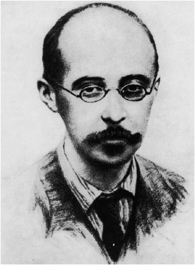

Chapter 2
THEORIES OF THE UNIVERSE
[Einstein’s theory of relativity] is probably the greatest synthetic achievement of the human intellect up to the present time.
BERTRAND RUSSELL
It is as if a wall which separated us from the Truth has collapsed. Wider expanses and greater depths are now exposed to the searching eye of knowledge, regions of which we had not even a presentiment. It has brought us much nearer to grasping that plan that underlies all physical happening.
HERMANN WEYL
But the years of anxious searching in the dark for a truth that one feels but cannot express, the intense desire and the alternations of confidence and misgiving, and the final emergence into light – only those who have experienced it can appreciate it.
ALBERT EINSTEIN
It is impossible to travel faster than the speed of light, and certainly not desirable, as one’s hat keeps blowing off.
WOODY ALLEN
During the course of the early twentieth century, cosmologists would develop and test a whole variety of models of the universe. These candidate models emerged as physicists gained a clearer understanding of the universe and the scientific laws that underpin it. What were the substances that made up the universe and how did they behave? What caused the force of gravity and how did gravity govern the interactions between the stars and planets? And the universe was made up of space and evolved in time, so what exactly did physicists mean by space and time? Crucially, answering all these fundamental questions would be possible only after physicists had addressed one seemingly simple and innocent question: what is the speed of light?
When we see a flash of lightning, it is because the lightning is emitting light, –which might have to travel several kilometres towards us before reaching our eyes. Ancient philosophers wondered how the speed of light affected the act of seeing. If light travels at a finite speed, then it would take some time to reach us, so by the time we see the lightning it may no longer actually exist. Alternatively, if light travels infinitely fast then the light would reach our eyes instantaneously, and we would see the lightning strike as it is happening. Deciding which scenario was correct seemed to be beyond the wit of the ancients.
The same question could be asked about sound, but this time the answer was more obvious. Thunder and lightning are generated simultaneously, but we hear the thunder after we see the lightning. For the ancient philosophers, it was reasonable to assume that sound has a finite speed and certainly travels much slower than light. They thus established a theory of light and sound based on the following incomplete chain of reasoning:
1. A lightning strike creates light and sound.
2. Light travels either very fast or infinitely fast towards us.
3. We see lightning very soon after the event, or instantaneously.
4. Sound travels at a slower speed (roughly 1,000 km/h).
5. Therefore we hear the thunder some time later, depending on the distance to the lightning strike.
But still the fundamental question relating to the speed of light – whether it was finite or infinite – continued to exercise the world’s greatest minds for centuries. In the fourth century BC, Aristotle argued that light travelled with infinite speed, so the event and the observation of the event would be simultaneous. In the eleventh century AD, the Islamic scientists Ibn Sina and al-Haytham both took the opposite view, believing that the speed of light, though exceedingly high, was finite, so any event could be observed only some time after it had happened.
There was clearly a difference of opinion, but either way the debate remained merely philosophical until 1638, when Galileo proposed a method for measuring the speed of light. Two observers with lamps and shutters would stand some distance apart. The first observer would flash a signal to the second, who would then immediately flash a signal back. The first observer could then estimate the speed of light by measuring the time between sending and receiving signals. Unfortunately Galileo was already blind and under house arrest when he came up with this idea, so he was never able to conduct his experiment.
In 1667, twenty-five years after Galileo’s death, Florence’s illustrious Accademia del Cimento decided to put Galileo’s idea to the test. Initially, two observers stood relatively close together. One flashed a lantern at the other, and the other would see the signal and flash back. The first man estimated the time between sending the original flash and seeing the response flash, and the result was an interval of a fraction of a second. This, however, could be attributed to their reaction times. The experiment was repeated over and over again, with the two men moving farther apart, measuring the time of the return flash over increasing distances. Had the return time increased with distance, it would have indicated a relatively low and finite speed of light, but in fact the return time remained constant. This implied that the speed of light was either infinite, or so fast that the time taken by the light to travel between the two observers was insignificant compared with their reaction times. The experimenters could draw only the limited conclusion that the speed of light was somewhere between 10,000 km/h and infinity. Had it been any slower, they would have detected a steadily increasing delay as the men moved apart.
Whether the speed of light was finite or infinite remained an open question until a Danish astronomer named Ole Römer addressed the issue a few years later. As a young man, he had worked at Tycho Brahe’s former observatory at Uraniborg, measuring the observatory’s exact location so that Tycho’s observations could be correlated with others made elsewhere in Europe. In 1672, having earned a reputation as an excellent surveyor of the heavens, he was offered a post at the prestigious Academy of Sciences in Paris, which had been set up so that scientists could pursue independent research, free from having to pander to the whims of kings, queens or popes. It was in Paris that fellow Academician Giovanni Domenico Cassini encouraged Römer to study a strange anomaly associated with Jupiter’s moons, in particular Io. Each moon should orbit Jupiter in a perfectly regular manner, just as our Moon orbits the Earth regularly, so astronomers were shocked to discover that Io’s timings were slightly irregular. Sometimes Io appeared from behind Jupiter ahead of schedule by a few minutes, while at other times it was a few minutes late. A moon should not behave in this way, and everybody was baffled by Io’s lackadaisical attitude.
In order to investigate the mystery, Römer studied in minute detail a table of Io’s positions and timings that had been logged by Cassini. Nothing made sense, until it gradually dawned on Römer that he could explain everything if light had a finite speed, as shown in Figure 19. Sometimes the Earth and Jupiter were on the same side of the Sun, whereas at other times they were on opposite sides of the Sun and farther apart. When the Earth and Jupiter were farthest apart, then the light from Io had to travel 300,000,000 km farther before reaching the Earth compared with when the two planets were closest together. If light had a finite speed, then it would take longer for the light to cover this extra distance and it would seem as if Io was running behind schedule. In short, Römer argued that Io was perfectly regular, and its apparent irregularity was an illusion caused by the different times required for the light from Io to cover different distances to the Earth.
To help understand what is going on, imagine that you are near a cannon that is fired exactly on the hour. You hear the cannon, start your stopwatch and then start driving away in a straight line at l00 km/h, so that you are 100 km away by the time the cannon is fired again. You stop the car and hear a very faint cannon blast. Given that sound travels at roughly 1,000 km/h, you will perceive that it was 66 minutes, not 60 minutes, between the first and second cannon blasts. The 66 minutes consists of 60 minutes for the actual interval between firings and 6 minutes for the time taken for the sound of the second blast to cover the 100 km and reach you. The cannon is perfectly regular in its firings, but you will experience a delay of 6 minutes because of the finite speed of sound and your new position.
Figure 19 Ole Römer measured the speed of light by studying the movements of Jupiter’s moon Io. These diagrams represent a slight variation on his actual method. In diagram (a), Io is about to disappear behind Jupiter; in diagram (b) Io has completed half a revolution so that it is in front of Jupiter. Meanwhile, Jupiter has hardly moved and the Earth has moved significantly, because the Earth orbits the Sun twelve times more quickly than Jupiter. An astronomer on the Earth measures the time that has elapsed between (a) and (b), namely the time taken for Io to complete half a revolution.
In diagram (c), Io has completed another half-revolution back to where it started, while the Earth has moved on to a position that is farther from Jupiter. The astronomer measures the time between (b) and (c), which should be the same as the time between (a) and (b), but in fact it turns out to be significantly longer. The reason for the extra time is that it takes the light from Io a little longer to cover the extra distance to the Earth in diagram (c), because the Earth is now farther away from Jupiter. The time delay and the distance between Earth and Jupiter can be used to estimate the speed of light. (The distances moved by the Earth in these diagrams are exaggerated, because Io orbits Jupiter in less than two days. Also, Jupiter’s position would change and complicate matters.)
Having spent three years analysing the observed timings of Io and the relative positions of the Earth and Jupiter, Römer was able to estimate the speed of light to be 190,000 km/s. In fact, the true value is almost 300,000 km/s, but the important point was that Römer had shown that light had a finite speed and derived a value that was not wildly inaccurate. The age-old debate had been resolved at last.
However, Cassini was distraught when Römer announced his result, because he received no acknowledgement from Römer, even though the calculation was based largely on his observational data. Cassini became a harsh critic of Römer and a vocal spokesman for the majority who still favoured the theory that the speed of light was infinite. Römer did not relent, and used his finite light speed to predict that an eclipse of Io on 9 November 1676 would occur 10 minutes later than predicted by his opponents. In a classic case of ‘I told you so’, Io’s eclipse was indeed several minutes behind schedule. Römer was proved right, and he published another paper confirming his measurement of the speed of light.
This eclipse prediction should have settled the argument once and for all. Yet, as we have already seen in the case of the Sun-centred versus Earth-centred debate, factors beyond pure logic and reason sometimes influence the scientific consensus. Cassini was senior to Römer and also outlived him, so by political clout and simply by being alive he was able to sway opinion against Römer’s argument that light had a finite speed. A few decades later, however, Cassini and his colleagues gave way to a new generation of scientists who would take an unbiased look at Römer’s conclusion, test it for themselves and accept it.
Once scientists had established that the speed of light was finite, they set about trying to solve yet another mystery concerning its propagation: what was the medium responsible for carrying light? Scientists knew that sound could travel in a variety of media –talkative humans send sound waves through the medium of gaseous air, whales sing to each other through the medium of liquid water, and we can hear the chattering of our teeth through the medium of the solid bones between teeth and ears. Light can also travel through gases, liquids and solids, such as air, water and glass, but there was a fundamental difference between light and sound, as demonstrated by Otto von Guericke, the Burgomeister of Magdeburg, Germany, who conducted a whole series of famous experiments in 1657.
Von Guericke had invented the first vacuum pump and was keen to explore the strange properties of the vacuum. In one experiment he placed two large brass hemispheres face to face and evacuated the air from inside them so that they behaved like two exceedingly powerful suction cups. Then, in a marvellous display of scientific showmanship, he demonstrated that it was impossible for two teams of eight horses to pull the hemispheres apart.
Although this equine tug-of-war showed the power of the vacuum, it said nothing about the nature of light. This question was addressed in a somewhat daintier experiment, which required von Guericke to evacuate a glass jar containing a ringing bell. As the air was sucked out of the jar, the audience could no longer hear the ringing, but they could still see the clapper hitting the bell. It was clear, therefore, that sound could not travel through a vacuum. At the same time, the experiment showed that light could travel through a vacuum because the bell did not vanish and the jar did not darken. Bizarrely, if light could travel through a vacuum, then something could travel through nothing.
Confronted with this apparent paradox, scientists began to wonder if a vacuum was really empty. The jar had been evacuated of air, but perhaps there was something remaining inside, something that provided the medium for conveying light. By the nineteenth century, physicists had proposed that the entire universe was permeated by a substance they termed the luminiferous ether, which somehow acted as a medium for carrying light. This hypothetical substance had to possess some remarkable properties, as pointed out by the great Victorian scientist Lord Kelvin:
Now what is the luminiferous ether? It is matter prodigiously less dense than air – millions and millions and millions of times less dense than air. We can form some sort of idea of its limitations. We believe it is a real thing, with great rigidity in comparison with its density: it may be made to vibrate 400 million million times per second; and yet be of such density as not to produce the slightest resistance to any body going through it.
In other words, the ether was incredibly strong, yet strangely insubstantial. It was also transparent, frictionless and chemically inert. It was all around us, yet it was clearly hard to identify because nobody had ever seen it, grabbed it or bumped into it. Nevertheless, Albert Michelson, America’s first Nobel Laureate in physics, believed that he could prove its existence.
Michelson’s Jewish parents had fled persecution in Prussia in 1854, when he was just two years old. He grew up and studied in San Francisco before going on to join the US Naval Academy, where he graduated a lowly twenty-fifth in seamanship, but top in optics. This prompted the Academy’s superintendent to remark: ‘If in the future you’d give less attention to those scientific things and more to your naval gunnery, there might come a time when you would know enough to be of some service to your country.’ Michelson sensibly moved into full-time optics research, and in 1878, aged just twenty-five, he determined the speed of light to be 299,910 ± 50 km/s, which was twenty times more accurate than any previous estimation.
Then, in 1880, Michelson devised the experiment that he hoped would prove the existence of the light-bearing ether. His equipment split a single light beam into two separate perpendicular beams. One beam travelled in the same direction as the Earth’s movement through space, while the other beam moved in a direction at a right angle to the first beam. Both beams travelled an equal distance, were reflected off mirrors, and then returned to combine into a single beam. Upon combining they underwent a process known as interference, which allowed Michelson to compare the two beams and identify any discrepancy in travel times.
Michelson knew that the Earth travels at roughly 100,000 km/h around the Sun, which presumably meant that it also passed through the ether at this speed. Since the ether was supposed to be a steady medium that permeated the universe, the Earth’s passage through the universe would create a sort of ether wind. This would be similar to the sort of pseudo-wind you would feel if you were speeding along in an open-top car on a still day – there is no actual wind, but there seems to be one due to your own motion. Therefore, if light is carried in and by the ether, its speed should be affected by the ether wind. More specifically, in Michelson’s experiment one light beam would be travelling into and against the ether wind and should thus have its speed significantly affected, while the other beam would be travelling across the ether wind and its speed should be less affected. If the travel times for the two beams were different, then Michelson would be able to use this discrepancy as strong evidence in favour of the ether’s existence.
This experiment to detect the ether wind was complicated, so Michelson explained the underlying premise in terms of a puzzle:
Suppose we have a river of width 100 feet, and two swimmers who both swim at the same speed, say 5 feet per second. The river flows at a steady rate of 3 feet per second. The swimmers race in the following way: they both start at the same point on one bank. One swims directly across the river to the closest point on the opposite bank, then turns around and swims back. The other stays on one side of the river, swimming downstream a distance (measured along the bank) exactly equal to the width of the river, then swims back to the start. Who wins? [See Figure 20 for the solution.]
Figure 20 Albert Michelson used this swimming puzzle to explain his ether experiment. The two swimmers play the same role as the two beams of light heading in perpendicular directions, then both returning to the same starting point. One swims first with and then against the current, while the other swims across the current – just as one light beam travels with and against the ether wind, and the other across it. The puzzle is to work out the winner of a race over a distance of 200 feet between two swimmers who both can swim at 5 feet per second in still water. Swimmer A goes downstream 100 feet and back upstream 100 feet, whereas swimmer B goes across the river and back, also covering two legs of 100 feet. The river has a 3 ft/s current.
The time of swimmer A, going downstream and then upstream, is easy to analyse. With the current, the swimmer has an overall speed of 8 ft/s (5 + 3 ft/s), so the 100 feet takes just 12.5 seconds. Coming back against the current means that he is swimming at only 2 ft/s (5 - 3 ft/s), so swimming this 100 feet takes him 50 seconds. Therefore his total time is 62.5 seconds to swim 200 feet.
Swimmer B, going across the river, has to swim at an angle in order to compensate for the current. Pythagoras’ theorem tells us that if he swims at 5 ft/s at the correct angle, he will have an upstream component of 3 ft/s, which cancels the effect of the current, and a cross-stream component of 4 ft/s. Therefore he swims the first width of 100 feet in just 25 seconds, and then takes another 25 seconds to return, giving a total time of 50 seconds to swim 200 feet. Although both swimmers would swim at the same speed in still water, the swimmer crossing the current wins the race against the swimmer who goes with and against the current. Hence, Michelson suspected that a light beam travelling across the ether wind would have a shorter travel time than a beam travelling with and then against the ether wind. He designed an experiment to see if this was really the case.
Michelson invested in the best possible light sources and mirrors for his experiment and took every conceivable precaution in assembling the apparatus. Everything was carefully aligned, levelled and polished. To increase the sensitivity of his equipment and minimise errors, he even floated the main assembly in a vast bath of mercury, thereby isolating it from external influences such as the tremors caused by distant footsteps. The whole point of this experiment was to prove the existence of the ether, and Michelson had done everything possible to maximise the chance of its detection – which is why he was so astonished by his complete and utter failure to detect any difference in the arrival times of the two perpendicular beams of light. There was no sign of the ether whatsoever. It was a shocking result.
Desperate to find out what had gone wrong, Michelson recruited the chemist Edward Morley. Together they rebuilt the apparatus, improving each piece of equipment to make the experiment even more sensitive, and then they carried out the measurements over and over again. Eventually, in 1887, after seven years of repeating their experiment, they published their definitive results. There was still no sign of the ether. Therefore they were forced to conclude that the ether did not exist.
Bearing in mind its ridiculous set of properties – it was supposed to be the least dense yet the most rigid substance in the universe – it should have come as no surprise that the ether was a fiction. Nevertheless, scientists discarded it with great reluctance because it had been the only conceivable way to explain how light was transmitted. Even Michelson had problems coming to terms with his own conclusion. He once nostalgically referred to the ‘beloved old ether, which is now abandoned, though I personally still cling a little to it’.
The crisis of the non-existent ether was magnified because it was supposed to have been responsible for carrying both the electric and magnetic fields as well as light. The dire situation was nicely summarised by the science writer Banesh Hoffmann:
First we had the luminiferous ether,
Then we had the electromagnetic ether,
And now we haven’t e(i)ther.
So, by the end of the nineteenth century Michelson had proved that the ether did not exist. Ironically, he had built his career on a whole series of successful experiments relating to optics, but his greatest triumph was the result of a failed experiment. His goal all along had been to prove the existence of the ether, not its absence. Physicists now had to accept that light could somehow travel through a vacuum – through space devoid of any medium.
Michelson’s achievement had required expensive, specialist experimental apparatus and years of dedicated effort. At roughly the same time, a lone teenager, unaware of Michelson’s experimental breakthrough, had also concluded that the ether did not exist, but on the basis of theoretical arguments alone. His name was Albert Einstein.
Einstein’s Thought Experiments
Einstein’s youthful prowess and his later full-blown genius sprang largely from his immense inquisitiveness about the world around him. Throughout his prolific, revolutionary and visionary career he never stopped wondering about the underlying laws that governed the universe. Even at the age of five, he became engrossed in the mysterious workings of a compass given to him by his father. What was the invisible force that tugged at the needle, and why did it always point to the north? The nature of magnetism became a lifelong fascination, typical of Einstein’s insatiable appetite for exploring apparently trivial phenomena.
As Einstein told his biographer Carl Selig: ‘I have no special talents. I am only passionately curious.’ He also noted:‘The important thing is not to stop questioning. Curiosity has its own reason for existing. One cannot help but be in awe when one contemplates the mysteries of eternity, of life, of the marvellous structure of reality. It is enough if one tries to comprehend only a little of this mystery every day.’ The Nobel Laureate Isidor Isaac Rabi reinforced this point: ‘I think physicists are the Peter Pans of the human race. They never grow up and they keep their curiosity.’
In this respect, Einstein had much in common with Galileo. Einstein once wrote:‘We are in the position of a little child entering a huge library, whose walls are covered to the ceiling with books in many different languages.’ Galileo made a similar analogy, but he condensed the entire library of nature into a single grand book and a single language, which his curiosity compelled him to decipher: ‘It is written in the language of mathematics, and its characters are triangles, circles and other geometrical figures, without which it is humanly impossible to understand a single word of it; without these one is wandering about in a dark labyrinth.’
Also linking Galileo and Einstein was a common interest in the principle of relativity. Galileo had discovered the principle of relativity, but it was Einstein who would fully exploit it. Simply stated, Galilean relativity argues that all motion is relative, which means that it is impossible to detect whether or not you are moving without referring to an external reference frame. Galileo stated vividly what he meant by relativity in the Dialogue:
Shut yourself up with a friend in the main cabin below deck on some large ship, and have with you there some flies, butterflies and other small flying animals. Have a large bowl of water with some fish in it; hang up a bottle that empties drop by drop into a wide vessel beneath it. With the ship standing still, observe carefully how all the little animals fly with equal speed to all sides of the cabin; how the fish swim indifferently in all directions; how the drops fall into the vessel beneath. And, in throwing something to your friend, you need to throw it no more strongly in one direction than another, the distances being equal; and jumping with your feet together, you pass equal spaces in every direction.
When you have observed all these things carefully … have the ship proceed with any speed you like, so long as the motion is uniform and not fluctuating this way and that. You will discover not the least change in all the effects named, nor could you tell from any of them whether the ship moves or stands still.
In other words, as long as you are moving at constant speed in a straight line, there is nothing you can do to measure how fast you are travelling, or indeed to tell whether you are moving at all. This is because everything around you is moving at the same velocity, and all phenomena (e.g. dripping bottles, flying butterflies) happen the same regardless of whether you are moving or stationary. Also, Galileo’s scenario takes place ‘in the main cabin below deck’, so you are isolated, which removes any hope of detecting any relative motion by referring to an external frame of reference. If you isolate yourself in a similar way by sitting with your ears plugged and your eyes shut inside a train on a smooth track, then it is very difficult to tell if the train is racing along at 100 km/h or whether it is still stuck at the station, which is another demonstration of Galilean relativity.
This was one of Galileo’s greatest discoveries, because it helped to convince sceptical astronomers that the Earth does indeed go round the Sun. Anti-Copernican critics had argued that the Earth could not go around the Sun because we would feel this motion as a constant wind or as the ground being pulled from under our feet, and clearly this does not happen. However, Galileo’s principle of relativity explained that we would not sense the Earth’s tremendous velocity through space because everything from the ground to the atmosphere is moving through space at the same speed as we are. A moving Earth is effectively the same environment as the one we would experience if the Earth were static.
In general, Galileo’s theory of relativity stated that you can never tell if you are moving quickly or moving slowly or moving at all. This holds true whether you are isolated on the Earth, or ear-plugged and blinkered on a train, or tucked away below deck on a ship, or cut off from an external reference frame in some other way.
Unaware that Michelson and Morley had disproved the existence of the ether, Einstein used Galileo’s principle of relativity as his bedrock for exploring whether or not the ether existed. In particular, he invoked Galilean relativity in the context of a thought experiment, also known as a gedanken experiment (from the German word for ‘thought’). This is a purely imaginary experiment that is conducted only in the physicist’s head, usually because it involves a procedure that is not in practice achievable in the real world. Although a purely theoretical construct, a thought experiment can often lead to a deep understanding of the real world.
In a thought experiment he conducted in 1896, when just sixteen years old, Einstein wondered what would happen if he could travel at the speed of light while holding out a mirror in front of him. In particular, he wondered whether he would be able to see his own reflection. The Victorian theory of the ether pictured it as a static substance that permeated the entire universe. Light was supposedly carried by the ether, so this implied that it travelled at the speed of light (300,000 km/s) relative to the ether. In Einstein’s thought experiment, he, his face and his mirror were also travelling through the ether at the speed of light. Therefore light would try to leave Einstein’s face and try to travel towards the mirror in his hand, but it would never actually leave his face, let alone reach the mirror because everything is moving at the speed of light. If light could not reach the mirror, then it could not be reflected back, and consequently Einstein would not be able to see his own reflection.
This imaginary scenario was shocking because it completely defied Galileo’s principle of relativity, according to which someone travelling at constant velocity should not be able to ascertain whether they are moving quickly, slowly, forwards, backwards – or indeed whether they are moving at all. Einstein’s thought experiment implied that he would know when he was moving at the speed of light because his reflection would vanish.
The boy wonder had conducted a thought experiment based on an ether-filled universe, and the result was paradoxical because it contradicted Galileo’s principle of relativity. Einstein’s thought experiment can be recast in terms of Galileo’s below-deck scenario: the sailor would know if the ship was moving at the speed of light because his reflection would vanish. However, Galileo had firmly declared that the sailor should be unable to tell whether his ship was moving.
Something had to give. Either Galilean relativity was wrong, or Einstein’s thought experiment was fundamentally flawed. In the end, Einstein realised that his thought experiment was at fault because it was based on an ether-filled universe. To resolve the paradox, he concluded that light did not travel at some fixed speed relative to the ether, that light was not carried by the ether, and that the ether did not even exist. Unbeknown to Einstein, this is exactly what Michelson and Morley had already discovered.
You might feel wary of Einstein’s slightly tortuous thought experiment, especially if you view physics as a discipline reliant on real experiments with real equipment and real measurements. Indeed, thought experiments are at the fringe of physics and are not wholly reliable, which is why Michelson and Morley’s real experiment was so important. Nevertheless, Einstein’s thought experiment demonstrated the brilliance of his young mind and, even more importantly, it set him on the road to addressing the implications for a universe devoid of ether and what this meant in terms of the speed of light.
The Victorian notion of the ether had been very comforting, because it provided an adequate enough context for what scientists meant when they talked about the speed of light. Everybody accepted that light travelled at a constant speed, 300,000 km/s, and everybody had assumed that this meant 300,000 km/s relative to the medium in which it travelled, which was thought to be the ether. Everything made sense in the Victorian ether-filled universe. But Michelson, Morley and Einstein had shown that there was no ether. So, if light did not require a medium in which to travel, what did it mean when scientists talked about the speed of light? The speed of light was 300,000 km/s, but relative to what?
Einstein thought about the question intermittently over the next few years. He eventually came up with a solution to the problem, but one that depended heavily on intuition. At first sight his solution seemed nonsensical, yet later he would be proved to be absolutely right. According to Einstein, light travels at a constant velocity of 300,000 km/s relative to the observer. In other words, no matter what our circumstances or how the light is being emitted, each one of us personally measures the same speed of light, which is 300,000 km/s, or 300,000,000 m/s (more accurately, 299,792,458 m/s). This seems absurd because it runs counter to our everyday experience of the velocities of ordinary objects.
Imagine a schoolboy with a peashooter which always fires peas at 40 m/s. You are leaning against a wall some way down the street from the schoolboy. He fires his peashooter at you, so the pea leaves the peashooter at 40 m/s, it crosses the intervening space at 40 m/s, and when it hits your forehead it certainly feels as if it was moving at 40 m/s. If the schoolboy gets on his bike and cycles towards you at 10 m/s and fires the peashooter again, then the pea still leaves the peashooter at 40 m/s, but it covers the ground at 50 m/s and feels like 50 m/s when it hits you. The extra speed is down to the pea being launched from a moving bicycle. And if you march towards the schoolboy at 4 m/s then the situation gets even worse, because the pea now feels like it is moving at 54 m/s. In summary, you (the observer) perceive a different pea speed depending on a variety of factors.
Einstein believed that light behaved differently. When the boy is not riding his bicycle, then the light from his bicycle lamp strikes you at a speed of 299,792,458 m/s. When the bike is ridden towards you at 10 m/s, then the light from the lamp still strikes you at a speed of 299,792,458 m/s. And even when you start moving towards the bike while it is moving towards you, then the light still strikes you at 299,792,458 m/s. Light, insisted Einstein, travels at a constant velocity relative to the observer. Whoever is measuring the speed of light always comes up with the same answer, whatever the situation. Experiments would later demonstrate that Einstein was correct. The distinction between the behaviour of light and other things, such as peas, is laid out below.
| Your perception of the speed of peas | Your perception of the speed of light | |
|---|---|---|
| Nobody is moving | 40 m/s | 299,792,458 m/s |
| Schoolboy cycles towards you at 10 m/s | 50 m/s | 299,792,458 m/s |
| …and you walk towards the boy at 4 m/s | 54 m/s 299,792,458 m/s |
Einstein was convinced that the speed of light must be constant for the observer because it seemed to be the only way to make sense of his mirror-based thought experiment. We can re-examine the thought experiment according to this new rule for the speed of light. If Einstein, who was the observer in his thought experiment, were to travel at the speed of light, he would nonetheless see the light leaving his face at the speed of light, because it travels relative to the observer. So the light would leave Einstein at the speed of light, and would be reflected back at the speed of light, which means that he would now be able to see his reflection. Exactly the same thing would happen if he were to stand still in front of his bathroom mirror – the light would leave his face at the speed of light and be reflected back at the speed of light, and he would see his reflection. In other words, by assuming that the speed of light was constant relative to the observer, then Einstein would not be able to tell whether he was moving at the speed of light or standing still in his bathroom. This is exactly what Galileo’s principle of relativity required, namely that you have the same experience whether or not you are moving.
The constancy of the speed of light relative to the observer was a striking conclusion, and it continued to dominate Einstein’s thoughts. He was still only a teenager, so it was with the ambition and naivety of youth that he explored the implications of his ideas. Eventually, he would go public and shake the world with his revolutionary ideas, but for the time being he worked in private and continued with his mainstream education.
Crucially, throughout this period of contemplation, Einstein maintained his natural verve, creativity and curiosity, despite the authoritarian nature of his college. He once said: ‘The only thing that interferes with my learning is my education.’ He paid little attention to his lecturers, including the distinguished Hermann Minkowski, who responded by dismissing him as ‘a lazy dog’. Another lecturer, Heinrich Weber, told him: ‘You are a smart boy, Einstein, a very smart boy. But you have one great fault: you do not let yourself be told anything.’ Einstein’s attitude was partly due to Weber’s refusal to teach the latest ideas in physics, which is also the reason why Einstein addressed him as plain Herr Weber, rather than Herr Professor Weber.
As a result of this battle of wills, Weber did not write the letter of recommendation that Einstein required to pursue an academic career. Consequently, Einstein spent the next seven years after graduation as a clerk in the patent office at Berne, Switzerland. As it turned out, this was not such a terrible predicament. Instead of being constrained by the mainstream theories promulgated at the great universities, Einstein could now sit in his office and think about the implications of his teenage thought experiment—exactly the sort of speculative deliberations that Herr Professor Weber would have pooh-poohed. Also, Einstein’s prosaic office job, initially ‘probationary technical expert, third class’, allowed him to squeeze all of his patenting responsibilities into just a few hours each day, leaving him plenty of time to conduct his personal research. Had he been a university academic, he would have wasted day after day dealing with institutional politics, endless administrative chores and burdensome teaching responsibilities. In a letter to a friend, he described his office as ‘that secular cloister, where I hatched my most beautiful ideas’.
These years as a patent clerk would prove to be one of the most fruitful periods of his intellectual life. At the same time, it was a highly emotional time for the maturing genius. In 1902, Einstein experienced the deepest shock of his entire life when his father fell fatally ill. On his deathbed, Hermann Einstein gave Albert his blessing to marry Mileva Marić, unaware that the couple already had a daughter, Lieserl. In fact, historians were also unaware of Albert and Mileva’s daughter until they were given access to Einstein’s personal correspondence in the late 1980s. It emerged that Mileva had returned to her native Serbia to give birth, and as soon as Einstein heard the news of their daughter’s arrival he wrote to Mileva: ‘Is she healthy and does she already cry properly? What kind of little eyes does she have? Who of us two does she resemble more? Who is giving her milk? Is she hungry? And is she completely bald? I love her so much and I do not even know her yet!… She certainly can cry already, but will learn to laugh only much later. Therein lies a deep truth.’ Albert would never hear his daughter cry or watch her laugh. The couple could not risk the social disgrace of having an illegitimate daughter, and Lieserl was put up for adoption in Serbia.
Albert and Mileva were married in 1903, and their first son, Hans Albert, was born the next year. In 1905, while juggling the responsibilities of fatherhood and his obligations as a patent clerk, Einstein finally managed to crystallise his thoughts about the universe. His theoretical research climaxed in a burst of scientific papers which appeared in the journal Annalen der Physik. In one paper, he analysed a phenomenon known as Brownian motion and thereby presented a brilliant argument to support the theory that matter is composed of atoms and molecules. In another paper, he showed that a well-established phenomenon called the photoelectric effect could be fully explained using the newly developed theory of quantum physics. Not surprisingly, this paper went on to win Einstein a Nobel prize.
The third paper, however, was even more brilliant. It summarised Einstein’s thoughts over the previous decade on the speed of light and its constancy relative to the observer. The paper created an entirely new foundation for physics and would ultimately lay the ground rules for studying the universe. It was not so much the constancy of the speed of light itself that was so important, but the consequences that Einstein predicted. The repercussions were mind-boggling, even to Einstein himself. He was still a young man, barely twenty-six years old when he published his research, and he had experienced periods of enormous self-doubt as he worked towards what has become known as his special theory of relativity: ‘I must confess that at the very beginning when the special theory of relativity began to germinate in me, I was visited by all sorts of nervous conflicts. When young I used to go away for weeks in a state of confusion, as one who at the time had yet to overcome the state of stupefaction in his first encounter with such questions.’
Figure 21 Albert Einstein pictured in 1905, the year he published his special theory of relativity and established his reputation.
One of the most amazing outcomes of Einstein’s special theory of relativity is that our familiar notion of time is fundamentally wrong. Scientists and non-scientists had always pictured time as the progression of some kind of universal clock that ticked relentlessly, a cosmic heartbeat, a benchmark against which all other clocks could be set. Time would therefore be the same for everybody, because we would all live by the same universal clock: the same pendulum would swing at the same rate today and tomorrow, in London or in Sydney, for you and for me. Time was assumed to be absolute, regular and universal. No, said Einstein: time is flexible, stretchable and personal, so your time may be different from my time. In particular, a clock moving relative to you ticks more slowly than a static clock alongside you. So if you were on a moving train and I was standing on a station platform looking at your watch as you whizzed by, then I would perceive your watch to be running more slowly than my own watch.
This seems impossible, but for Einstein it was logically unavoidable. What follows in the next few paragraphs is a brief explanation of why time is personal to the observer and depends on the travelling speed of the clock being observed. Although there is a small amount of mathematics, the formulas are quite simple, and if you can follow the logic then you will understand exactly why special relativity forces us to change our view of the world. However, if you do skip the mathematics or get stuck, then don’t worry, because the most important points will be summarised when the mathematics is complete.
To understand the impact of the special theory of relativity on the concept of time, let us consider an inventor, Alice, and her very unusual clock. All clocks require a ticker, something with a regular beat that can be used to count time, such as a swinging pendulum in a grandfather clock or a constant dripping in a water-clock. In Alice’s clock, the ticker is a pulse of light that is reflected between two parallel mirrors 1.8 metres apart, as shown in Figure 22(a). The reflections are ideal for keeping time, because the speed of light is constant and so the clock will be highly accurate. The speed of light is 300,000,000 m/s (which can be written as 3 × 108m/s), so if one tick is defined as the time for the light pulse to travel from one mirror to the other and back again, then Alice sees that the time between ticks is
Alice takes her clock inside a train carriage, which moves at a constant velocity down a straight track. She sees that the duration for each tick remains the same—remember, everything should remain the same because Galileo’s principle of relativity says that it should be impossible for her to tell whether she is stationary or moving by studying objects that are travelling with her.
Meanwhile, Alice’s friend Bob is standing on a station platform as her train whizzes past at 80% of the speed of light, which is 2.4 X 108m/s (this is an express train in the most extreme sense of the word). Bob can see Alice and her clock through a large window in her carriage, and from his point of view the light pulse traces out an angled path, as shown in Figure 22(b). He sees the light pulse as following its usual up-and-down motion, but for him it is also moving sideways, along with the train.
In other words, in between leaving the lower mirror and arriving at the upper mirror, the clock has moved forward, so the light has to follow a longer diagonal path. In fact, from Bob’s perspective, the train has moved forward 2.4 metres by the time the pulse has reached the upper mirror, which leads to a diagonal path length of 3.0 metres, so the light pulse has to cover 6.0 metres (up and down) between ticks. Because, according to Einstein, the speed of light is constant for any observer, for Bob the time between ticks must be longer because the light pulse travels at the same speed but has farther to travel. Bob’s perception of the time between ticks is easy to calculate:
Figure 22 The following scenario demonstrates one of the main consequences of Einstein’s special theory of relativity. Alice is inside her railway carriage with her mirror-clock, which ’ticks’ regularly as the light pulse is reflected between the two mirrors. Diagram (a) shows the situation from Alice’s perspective. The carriage is moving at 80% of the speed of light, but the clock is not moving relative to Alice, so she sees it behaving quite normally and ticking at the same rate as it always has.
Diagram (b) shows the same situation (Alice and her clock) from Bob’s perspective. The carriage is moving at 80% of the speed of light, so Bob sees the light pulse follow a diagonal path. Because the speed of light is constant for any observer, Bob perceives that it takes longer for the light pulse to follow the longer diagonal path, so he thinks that Alice’s clock is ticking more slowly than Alice herself perceives the ticking.
It is at this point that the reality of time begins to look extremely bizarre and slightly disturbing. Alice and Bob meet up and compare notes. Bob says that he saw Alice’s mirror-clock ticking once every 2.0 x 10-8s, whereas Alice maintains that her clock was ticking once every 1.2 × 10-8s. As far as Alice is concerned, her clock was running perfectly normally. Alice and Bob may have been staring at the same clock, but they perceived the ticking of time to be passing at different rates.
Einstein devised a formula that described how time changes for Bob compared to Alice under every circumstance:
It says that the time intervals observed by Bob are different from those observed by Alice, depending on Alice’s velocity (vA) relative to Bob and the speed of light (c). If we insert the numbers appropriate to the case described above, then we can see how the formula works:
Einstein once quipped: ‘Put your hand on a hot stove for a minute, and it seems like an hour. Sit with a pretty girl for an hour, and it seems like a minute. That’s relativity.’ But the theory of special relativity was no joke. Einstein’s mathematical formula described exactly how any observer would genuinely perceive time to slow down when looking at a moving clock, a phenomenon known as time dilation. This seems so utterly perverse that it raises four immediate questions:
1. Why don’t we ever notice this peculiar effect?
The extent of the time dilation depends on the speed of the clock or object in question compared with the speed of light. In the above example the time dilation is significant because Alice’s carriage is travelling at 80% of the speed of light, which is 240,000,000 m/s. However, if the carriage were travelling at a more reasonable speed of 100 m/s (360km/h), then Bob’s perception of Alice’s clock would be almost the same as her own. Plugging the appropriate numbers into Einstein’s equation would show that the difference in their perception of time would be just one part in a trillion. In other words, it is impossible for humans to detect the everyday effects of time dilation.
2. Is this difference in time real?
Yes, it is very real. There are numerous pieces of sophisticated hi-tech gadgetry that have to take into account time dilation in order to work properly. The Global Positioning System (GPS), which relies on satellites to pinpoint locations for devices such as car navigation systems, can function accurately only because it takes into account the effects of special relativity. These effects are significant because the GPS satellites travel at very high speeds and they make use of high-precision timings.
3. Does Einstein’s special theory of relativity apply only to clocks relying on light pulses?
The theory applies to all clocks and, indeed, to all phenomena. This is because light actually determines the interactions that take place at the atomic level. Therefore all the atomic interactions taking place in the carriage slow down from Bob’s point of view. He cannot view these individual atomic interactions, but he can view the combined effect of this atomic slowing-down. As well as seeing Alice’s mirror-clock ticking more slowly, Bob would see her waving to him more slowly as she passed by; she would blink and think more slowly, and even her heartbeat would slow down. Everything would be similarly affected by the same degree of time dilation.
4. Why can’t Alice use the slowing of her clock and her own movements to prove that she is moving?
All the peculiar effects described above are as observed by Bob from outside the moving train. As far as Alice is concerned, everything inside the train is perfectly normal, because neither her clock nor anything else in her carriage is moving relative to herself. Zero relative motion means zero time dilation. We should not be surprised that there is no time dilation, because if Alice noticed any change in her immediate surroundings as a result of her carriage’s motion, it would contravene Galileo’s principle of relativity. However, if Alice looked at Bob as she whizzed past him, it would appear to her that it was Bob and his environment that was undergoing time dilation, because he is moving relative to her.
The special theory of relativity impacts on other aspects of physics in equally staggering ways. Einstein showed that as Alice approaches, Bob perceives that she contracts along her direction of motion. In other words, if Alice is 2 m tall and 25 cm from front to back, and she is facing the front of the train as it approaches Bob, then he will see her as still 2 m tall but only 15 cm from front to back. She appears to be thinner. This is nothing as trivial as a perspective-based illusion, but is in fact a reality in Bob’s view of distance and space. It is a consequence of the same sort of reasoning that showed that Bob observes Alice’s clock ticking more slowly.
So, as well as assaulting traditional notions of time, special relativity was forcing physicists to reconsider their rock-solid notion of space. Instead of time and space being constant and universal, they were flexible and personal. It is not surprising that Einstein himself, as he developed his theory, sometimes found it difficult to trust his own logic and conclusions. ‘The argument is amusing and seductive,’ he said, ‘but for all I know, the Lord might be laughing over it and leading me around by the nose.’
Nevertheless, Einstein overcame his doubts and continued to pursue the logic of his equations. After his research was published, scholars were forced to acknowledge that a lone patent clerk had made one of the most important discoveries in the history of physics. Max Planck, the father of quantum theory, said of Einstein: ‘If [relativity] should prove to be correct, as I expect it will, he will be considered the Copernicus of the twentieth century.’
Einstein’s predictions of time dilation and length contraction were all confirmed by experiments in due course. His special theory of relativity alone would have been enough to make him one of the most brilliant physicists of the twentieth century, providing as it did a radical overhaul of Victorian physics, but Einstein’s stature was set to reach even greater heights.
Soon after publishing his 1905 papers, he set to work on a programme of research that was even more ambitious. To put it into context, Einstein once called his special theory of relativity ‘child’s play’ compared with what came after it. The rewards, however, would be well worth the effort. His next great discovery would reveal how the universe behaved on the grandest scale and provide cosmologists with the tools they needed to address the most fundamental questions imaginable.
The Gravity Battle: Newton v. Einstein
Einstein’s ideas were so iconoclastic that it took time for mainstream scientists to welcome this deskbound civil servant into their community. Although he published his special theory of relativity in 1905, it was not until 1908 that he received his first junior academic post at Berne University. Between 1905 and 1908, Einstein continued to work at the patent office in Berne, where he was promoted to ‘technical expert, second class’ and given the time to push ahead with his effort to extend the power and remit of his theory of relativity.
The special theory of relativity is labelled special because it applies only to special situations, namely those in which objects are moving at constant velocity. In other words, it could deal with Bob observing Alice’s train travelling at a fixed speed on a straight track, but not with a train that was speeding up or slowing down. Consequently, Einstein attempted to reformulate his theory so that it would cope with situations involving acceleration and deceleration. This grand extension of special relativity would soon become known as general relativity, because it would apply to more general situations.
When Einstein made his first breakthrough in building general relativity in 1907, he called it ‘the happiest thought of my life’. What followed, however, was eight years of torment. He told a friend how his obsession with general relativity was forcing him to neglect every other aspect of his life:‘I cannot find the time to write because I am occupied with truly great things. Day and night I rack my brain in an effort to penetrate more deeply into the things that I gradually discovered in the past two years and that represent an unprecedented advance in the fundamental problems of physics.’
In speaking of ‘truly great things’ and ‘fundamental problems’, Einstein was referring to the fact that the general theory of relativity seemed to be leading him towards an entirely new theory of gravity. If Einstein was right, then physicists would be forced to question the work of Isaac Newton, one of the icons of physics.
Newton was born in tragic circumstances on Christmas Day 1642, his father having died just three months earlier. While Isaac was still an infant, his mother married a sixty-three-year-old rector, Barnabas Smith, who refused to accept Isaac into his home. It fell to Isaac’s grandparents to bring him up, and as each year passed he developed a growing hatred towards the mother and stepfather who had abandoned him. Indeed, as an undergraduate, he compiled a list of childhood sins that included the admission of ‘threatening my father and mother Smith to burne them and the house over them’.
Not surprisingly, Newton grew into an embittered, isolated and sometimes cruel man. For example, when he was appointed Warden of the Royal Mint in 1696, he implemented a harsh regime of capturing counterfeiters, making sure that those convicted were hung, drawn and quartered. Forgery had brought Britain to the brink of economic collapse, and Newton judged that his punishments were necessary. In addition to brutality, Newton also used his brains to save the nation’s currency. One of his most important innovations at the Mint was to introduce milled edges on coins to combat the practice of clipping, whereby counterfeiters would shave off the edges of coins and use the clippings to make new coins.
In recognition of Newton’s contribution, the British £2 coin issued in 1997 had the phrase STANDING ON THE SHOULDERS OF GIANTS around its milled edge. These words are taken from a letter that Newton sent to fellow scientist Robert Hooke, in which he wrote: ‘If I have seen further it is by standing on the shoulders of giants.’ This appears to be a statement of modesty, an admission that Newton’s own ideas were built upon those of illustrious predecessors such as Galileo and Pythagoras. In fact, the phrase was a veiled and spiteful reference to Hooke’s crooked back and severe stoop. In other words, Newton was pointing out that Hooke was neither a physical giant, nor, by implication, an intellectual giant.
Whatever his personal failings, Newton made an unparalleled contribution to seventeenth-century science. He laid the foundations for a new scientific era with a research blitz that lasted barely eighteen months, culminating in 1666, which is today known as Newton’s annus mirabilis. The term was originally the title of a John Dryden poem about other more sensational events that took place in 1666, namely London’s survival after the Great Fire and the victory of the British fleet over the Dutch. Scientists, however, judge Newton’s discoveries to be the true miracles of 1666. His annus mirabilis included major breakthroughs in calculus, optics and, most famously, gravity.
In essence, Newton’s law of gravity states that every object in the universe attracts every other object. More exactly, Newton defined the force of attraction between any two objects as
The force (F) between the two objects depends on the masses of the objects (m1 and m2)—the bigger the masses, the bigger the force. Also, the force is inversely proportional to the square of the distance between the objects (r2), which means that the force gets smaller as the objects move farther apart. The gravitational constant (G) is always equal to 6.67 × 10-11 Nm2kg-2, and reflects the strength of gravity compared with other forces such as magnetism.
The power of this formula is that it encapsulates everything that Copernicus, Kepler and Galileo had been trying to explain about the Solar System. For example, the fact that an apple falls towards the ground is not because it wants to get to the centre of the universe, but simply because the Earth and the apple both have mass, and so are naturally attracted towards each other by the force of gravity. The apple accelerates towards the Earth, and at the same time the Earth even accelerates up towards the apple, although the effect on the Earth is imperceptible because it is much more massive than the apple. Similarly, Newton’s gravity equation can be used to explain how the Earth orbits the Sun because both bodies have a mass and therefore there is a mutual attraction between them. Again, the Earth orbits the Sun and not vice versa because the Earth is much less massive than the Sun. In fact, Newton’s gravity formula can even be used to predict that moons and planets will follow elliptical paths, which is exactly what Kepler demonstrated after analysing Tycho Brahe’s observations.
For centuries after his death, Newton’s law of gravity ruled the cosmos. Scientists assumed that the problem of gravity had been solved and used Newton’s formula to explain everything from the flight of an arrow to the trajectory of a comet. Newton himself, however, suspected that his understanding of the universe was incomplete: ‘I do not know what I may appear to the world, but to myself I seem to have been only a little boy playing on the seashore, and diverting myself now and then in finding a smoother pebble or a prettier shell than ordinary, whilst the great ocean of truth lay undiscovered before me.’
And it was Albert Einstein who first realised that there might be more to gravity than Newton had imagined. After his own annus mirabilis in 1905, when Einstein published several historic papers, he concentrated on expanding his special theory of relativity into a general theory. This involved a radically different interpretation of gravity based on a fundamentally different vision of how planets, moons and apples attract one another.
At the heart of Einstein’s new approach was his discovery that both distance and time are flexible, which was a consequence of his special theory of relativity. Remember, Bob sees a clock slowing down and Alice getting thinner as they move towards him. So time is flexible, as are the three dimensions of space (width, height, depth). Furthermore, the flexibility of both space and time are inextricably linked, which led Einstein to consider a single flexible entity known as spacetime. And it turned out that this flexible spacetime was the underlying cause of gravity. This cavalcade of weird flexibility is undoubtedly mind-bending, but the following paragraph provides a reasonably easy way to visualise Einstein’s philosophy of gravity.
Spacetime consists of four dimensions, three of space and one of time, which is unimaginable for most mortals, so it is generally easier to consider just two dimensions of space, as shown in Figure 23. Fortunately, this rudimentary spacetime illustrates many of the key features of authentic spacetime, so this is a convenient simplification. Figure 23(a) shows that space (and indeed spacetime) is rather like a piece of stretchy fabric; the gridlines help to show that if nothing is occupying space, then its ‘fabric’ is flat and undisturbed. Figure 23(b) shows how two-dimensional space changes severely if an object is placed upon it. This second diagram could represent space being warped by the massive Sun, rather like a trampoline curving under the weight of a bowling ball.
In fact, the trampoline analogy can be extended. If the bowling ball represents the Sun, then a tennis ball representing the Earth could be launched into orbit around it, as shown in Figure 23(c). The tennis ball actually creates its own tiny dimple in the trampoline and it carries this dimple with it around the trampoline. If we wanted to model the Moon, then we could try to roll a marble in the tennis ball dimple and make it race around the tennis ball, while the tennis ball and its dimple raced around the hollow caused by the bowling ball.

Figure 23 These diagrams are two-dimensional representations of four-dimensional spacetime, ignoring time and one space dimension. Diagram (a) shows a flat, smooth, undisturbed grid, representing empty space. If a planet were to pass through this space, then it would follow a straight line.
Diagram (b) shows space warped by an object such as the Sun. The depth of the depression depends on the mass of the Sun.
Diagram (c) shows a planet orbiting the depression caused by the Sun. The planet causes its own little depression in space, but it is too small to be represented in this diagram because the planet is relatively light.
In practice, any attempt to model a complicated system on a trampoline soon breaks down, because the friction of the trampoline fabric disturbs the natural movement of the objects. Nevertheless, Einstein was arguing that exactly these sorts of trampoline effects were really happening in the fabric of spacetime. According to Einstein, whenever physicists and astronomers witnessed phenomena involving the force of gravitational attraction, they were actually seeing objects reacting to the curvature of spacetime. For example, Newton would have said that an apple fell to Earth because there was a mutual force of gravitational attraction, but Einstein now felt that he had a deeper understanding of what was driving this attraction: the apple fell to Earth because it was falling into the deep hollow in spacetime caused by the mass of the Earth.
The presence of objects in spacetime gives rise to a two-way relationship. The shape of spacetime influences the motion of objects, and at the same time those very objects determine the shape of spacetime. In other words, the dimples in spacetime that guide the Sun and the planets are caused by those selfsame Sun and planets. John Wheeler, one of the leading general relativists of the twentieth century, summed up the theory with the dictum ‘Matter tells space how to bend; space tells matter how to move.’ Although Wheeler sacrificed accuracy for snappiness (‘space’ should have been ‘spacetime’), this is still a neat summary of Einstein’s theory.
This notion of flexible spacetime may sound crazy, but Einstein was convinced that it was right. According to his own set of aesthetic criteria, the link between flexible spacetime and gravity had to be true, or as Einstein put it: ‘When I am judging a theory, I ask myself whether, if I were God, I would have arranged the world in such a way.’ However, if Einstein was to convince the rest of the world that he was right, he had to develop a formula that encapsulated his theory. His greatest challenge was to transform the rather vague notion of spacetime and gravity described above into a formal theory of general relativity, set in a rigorous mathematical framework.
It would take Einstein eight years of arduous theoretical research before he could back up his intuition with a detailed, reasoned mathematical argument, during which time he suffered major setbacks and had to endure periods when his calculations seemed to fall apart. The intellectual effort would push Einstein to the brink of a nervous breakdown. His state of mind and level of frustration are revealed in brief comments he made in letters to friends during these years. He begged Marcel Grossman: ‘You must help me or else I’ll go crazy!’ He told Paul Ehrenfest that working on relativity was like enduring ‘a rain of fire and brimstone’. And in another letter, he worried that he had ‘again perpetrated something about gravitation theory which somewhat exposes me to the danger of being confined to a madhouse’.
The courage required to venture into uncharted intellectual territory cannot be underestimated. In 1913 Max Planck even warned Einstein against working on general relativity: ‘As an older friend I must advise you against it for in the first place you will not succeed, and even if you succeed no one will believe you.’
Einstein persevered, endured his ordeal and finally completed his theory of general relativity in 1915. Like Newton, Einstein had finally developed a mathematical formula to explain and calculate the force of gravity in every conceivable situation, but Einstein’s formula was very different and was built on a completely separate premise—the existence of a flexible spacetime.
Newton’s theory of gravity had been sufficient for the previous two centuries of physics, so why should physicists suddenly abandon it for Einstein’s newfangled theory? Newton’s theory could successfully predict the behaviour of everything from apples to planets, from cannonballs to raindrops, so just what was the point of Einstein’s theory?
The answer lies in the nature of scientific progress. Scientists attempt to create theories to explain and predict natural phenomena as accurately as possible. A theory could work satisfactorily for a few years, decades or centuries, but eventually scientists might develop and adopt a better theory, one that is more accurate, one that works in a wider range of situations, one that accounts for previously unexplained phenomena. This is exactly what happened with early astronomers and their understanding of the position of the Earth in the cosmos. Initially, astronomers believed that the Sun orbited a stationary Earth and, thanks to Ptolemy’s epicycles and deferents, this was a fairly successful theory. Indeed, astronomers used it to predict the motions of the planets with reasonable accuracy. However, the Earth-centred theory was eventually replaced by the Sun-centred theory of the universe because this new theory, based on Kepler’s elliptical orbits, was more accurate and could explain new telescopic observations such as the phases of Venus. It was a long and painful transition from one theory to the other, but once the Sun-centred theory had proved itself, there was no turning back.
In much the same way, Einstein believed that he was providing physics with an improved theory of gravity, one that was more accurate and closer to reality. In particular, Einstein suspected that Newton’s theory of gravity might fail in certain circumstances, whereas his own theory would be successful in every situation. According to Einstein, Newton’s theory would give incorrect results when predicting phenomena in situations where the gravitational force was extreme. Therefore, in order to prove that he was right, Einstein merely had to find one of these extreme scenarios and put both his and Newton’s theories of gravity to the test. Whichever theory could mimic reality most accurately would win the contest and reveal itself to be the true theory of gravity.
The problem for Einstein was that every single scenario on Earth involved the same level of mediocre gravity, and in these conditions both theories of gravity were equally successful and matched each other. Consequently, he realised that he would have to look beyond the Earth and into space to find an extreme gravity environment that might expose the flaws in Newton’s theory. In particular, he knew that the Sun has a tremendous gravitational field and that the planet closest to the Sun, Mercury, would feel a high gravitational attraction. He wondered if the Sun’s attraction was strong enough to make Mercury behave in a way that was inconsistent with Newton’s theory of gravity and perfectly in keeping with his own theory. On 18 November 1915, Einstein came across the test case that he needed—a piece of planetary behaviour which had been bothering astronomers for decades.
Back in 1859, the French astronomer Urbain Le Verrier had analysed an anomaly in the orbit of Mercury. The planet has an elliptical orbit, but instead of being fixed the ellipse itself rotates around the Sun, as shown in Figure 24. The elliptical orbit twists around the Sun, tracing out a classic Spirograph pattern. The twisting is very slight, amounting to just 574 arcseconds per century, and it takes a million orbits and over 200,000 years for Mercury to cycle its way around the Sun and return to its original orbital orientation.
Astronomers had assumed that Mercury’s peculiar behaviour was caused by the gravitational tug of the other planets in the Solar System pulling at its orbit, but when Le Verrier used Newton’s formula for gravity he found that the combined effect of the other planets could account for only 531 out of the 574 arcseconds of twisting that took place each century. This meant that 43 arcseconds of the twisting was unexplained. According to some, there had to be an extra, unseen influence on Mercury’s orbit that was causing the 43 arcseconds of twisting, such as an inner asteroid belt or an unknown moon of Mercury. Some even suggested the existence of a hitherto undiscovered planet, dubbed Vulcan, within Mercury’s orbit. In other words, astronomers assumed that Newton’s gravity formula was correct, and that the problem must lie with a failure on their part to input all the necessary factors. Once they found the new asteroid belt, moon or planet, they expected that redoing the calculation would yield the right answer, 574 arcseconds.
Einstein, however, was sure that there was no undiscovered asteroid belt, moon or planet, and that the problem lay with Newton’s gravity formula. Newton’s theory worked fine in terms of describing what happened in the lesser gravity of the Earth, but Einstein was confident that the extreme gravity found close to the Sun was outside Newton’s comfort zone. This was a perfect arena for the contest between the two rival theories of gravitation, and Einstein fully expected that his own theory would accurately account for Mercury’s twisting orbit.
He sat down, performed the necessary calculations using his own formula, and the result was 574 arcseconds, in exact agreement with observation. ‘For a few days’, wrote Einstein, ‘I was beside myself with joyous excitement.’
Unfortunately, the physics community was not entirely convinced by Einstein’s calculation. The scientific establishment is inherently conservative, as we already know, partly for practical reasons and partly for emotional reasons. If a new theory overturns an old one, the old theory has to be abandoned and what remains of the scientific framework has to be reconciled with the new theory. Such an upheaval is justified only if the establishment is utterly convinced that the new idea really works. In other words, the burden of proof always falls on the advocates of any new theory. The emotional barrier to acceptance is equally high. Senior scientists who had spent their entire lives believing in Newton were naturally reluctant to discard what they understood and trusted in favour of some upstart theory. Mark Twain also made a perceptive point: ‘A scientist will never show any kindness for a theory which he did not start himself.’
Figure 24 Nineteenth-century astronomers were puzzled by the twisting of Mercury’s orbit. This is an exaggerated diagram, inasmuch as Mercury’s orbit is less elliptical (i.e. more circular) and the Sun is closer to the centre of that orbit. More importantly, the twisting of the orbit is highly exaggerated. In reality, each orbit advances by just 0.00038° with respect to the previous orbit. When dealing with such small angles, scientists tend to use arcminutes and arcseconds rather than degrees:
1 arcminute - 1/60°
1 arcsecond = 1/60 arcminute = 1/3,600°
So each orbit of Mercury advances by roughly 0.00038°, or 0.023 arcminutes, or 1.383 arcseconds with respect to the previous orbit. It takes Mercury 88 Earth days to orbit the Sun, so after one Earth century Mercury completes 415 orbits, and its orbit has advanced by 415 x 1.383 = 574 arcseconds.
Not surprisingly, the scientific establishment stuck to its view that Newton’s formula was right and that astronomers sooner or later would discover some new body that would fully account for Mercury’s orbital twist. When closer scrutiny revealed no sign of an inner asteroid belt, moon or planet, astronomers then offered another solution to prop up Newton’s ailing theory. By changing one part of Newton’s equation from r2 to r2.00000016, they could more or less rescue the classical approach and account for the orbit of Mercury:
This, however, was just a mathematical trick. It had no justification in physics, but was merely a desperate last-ditch effort to rescue Newton’s theory of gravity. Indeed, such ad hoc tinkering was indicative of the sort of blinkered logic that had earlier resulted in Ptolemy adding yet more circles to his flawed epicyclic view of an Earth-centred universe.
If Einstein was going to overcome such conservatism, win over his critics and depose Newton, he had to gather even more evidence in favour of his theory. He had to find another phenomenon that could be explained by his own theory and not by Newton’s, something so extraordinary that it would provide overwhelming, incontrovertible proof in favour of Einsteinian gravity, general relativity and spacetime.
The Ultimate Partnership: Theory and Experiment
If a new scientific theory wants to be taken seriously, then it should pass two critical tests. First, it needs to be able to produce theoretical results that match all the existing observations of reality. Einstein’s theory of gravity had passed this test, because among other things it had indicated exactly the right amount of twisting for Mercury’s orbit. The second test, which is even more exacting, is that the theory should predict results for observations that have not yet been made. Once scientists are able to make those observations, and if they match the theoretical predictions, then this is compelling evidence that the theory is correct. When Kepler and Galileo argued that the Earth orbited the Sun, they were rapidly able to pass the first test, which was to produce theoretical results that matched the known movements of the planets. However, the second test was passed only when Galileo’s observation of the phases of Venus matched a theoretical prediction that had been made by Copernicus decades earlier.
The reason why the first type of test alone is not sufficient to convince doubters is the fear that the theory might have been tinkered with to generate the right result. However, it is impossible to adjust a theory to make it agree with the result of an observation that has not yet been made. Imagine that you are thinking of investing money with either Alice or Bob, who both claim to have their own perfect systems or theories for playing the stock market. Bob tries to convince you that his theory is better by showing you yesterday’s stock market figures and then reveals how his theory would have predicted them perfectly. Alice, on the other hand, shows you her predictions for the next day’s trading. Sure enough, twenty-four hours later, she is proved right. Who do you invest with, Bob or Alice? Clearly, there is a suspicion that Bob may have adjusted his theory to fit the previous day’s data after trading had finished, so his theory is not wholly convincing. But Alice’s theory on playing the stock market genuinely seems to work.
Similarly, if Einstein was going to prove that he was right and Newton was wrong, he would have to use his theory to make a robust prediction about an as yet unobserved phenomenon. Of course, this phenomenon would have to take place in an environment of extreme gravity, otherwise the Newtonian and Einsteinian predictions would coincide and there would be no winner.
In the end, the make-or-break test was to be a phenomenon involving the behaviour of light. Even before he had applied his theory to Mercury—in fact, before he had even finished developing his theory of general relativity—Einstein had begun to explore the interaction between light and gravity. According to his spacetime formulation of gravity, any beam of light that passed by a star or massive planet would be attracted by the force of gravity towards the star or planet, and the light would be slightly deflected from its original path. Newton’s theory of gravity also predicted that heavy objects would bend light, but to a lesser extent. Consequently, if somebody could measure the bending of light by a massive celestial body, then whether it was slight or very slight would determine who was right, Einstein or Newton.
As early as 1912, Einstein began collaborating with Erwin Freundlich on how to make the crucial measurement. Whereas Einstein was a theoretical physicist, Freundlich was an accomplished astronomer and therefore in a better position to say how one might go about making the observations that would discern the optical warping predicted by general relativity. Initially, they wondered whether Jupiter, the most massive planet in the Solar System, might be big enough to bend the light from a distant star, as shown in Figure 25. But when Einstein performed the relevant calculation using his formula, it was clear that the amount of bending caused by Jupiter would be too feeble to be detected, even though the planet has 300 times the mass of the Earth. Einstein wrote to Freundlich: ‘If only nature had given us a planet bigger than Jupiter!’
Next, they focused on the Sun, which is a thousand times as massive as Jupiter. This time Einstein’s calculations showed that the Sun’s gravitational attraction would have a significant influence on a ray of light from a distant star, and that the bending of the light should be detectable. For example, if a star was behind the rim of the Sun, thus not in our line of sight, we would not expect to see it from the Earth, as shown in Figure 26. However, the immense gravitational force of the Sun and warping of spacetime should deflect the star’s light towards the Earth, making it just visible. The star, which is still behind the Sun, should appear to be slightly to the side of the Sun. The amount of movement from actual to apparent position would be very slight, but it would indicate who was right, because Newton’s formula predicted an even smaller shift than did Einstein’s formula.
Figure 25 Einstein was interested in the possible bending of starlight by Jupiter, a planet massive enough to make a deep hollow in the fabric of spacetime. The diagram shows a distant star emitting a ray of light, which crosses space. The straight path shows how the light would have travelled across flat space had Jupiter not been present. The curved path shows how the light is deflected by Jupiter’s warping of space. Unfortunately for Einstein, Jupiter’s bending of starlight was too small to be detected.
But there was a problem: a star whose light was deflected by the Sun so that its position was apparently shifted just to the side of the Sun would still be impossible to see because of the overwhelming brilliance of the Sun. In fact, the region around the Sun is always sprinkled with stars, but they all remain invisible because their brightness is negligible in comparison with the Sun’s. There is, however, one circumstance when the stars beyond the Sun do reveal themselves. In 1913, Einstein wrote to Freundlich suggesting that they look for stellar shifts during a total solar eclipse.
Figure 26 Einstein hoped that the bending of starlight by the Sun could be used to prove his general theory of relativity. The line of sight between the Earth and the distant star is blocked by the Sun, but the mass of the Sun distorts spacetime, and the starlight is deflected to follow a curved path towards the Earth. Our instinct tells us that light travels in straight lines, so from Earth we project the path of the light back along the straight line on which it appears to have arrived, and it seems that the star has shifted. Einstein’s theory of gravity predicted a greater apparent stellar shift than did Newton’s theory of gravity, so measuring the shift would indicate which theory of gravity was correct.
When the Moon obliterates the Sun during an eclipse, day temporarily becomes night and the stars emerge. The Moon’s disc fits over the Sun’s so perfectly that it ought to be possible to identify a star just a fraction of a degree from the rim of the Sun – or rather a star whose light has been warped so that it appears to be a fraction of a degree outside the solar disc.
Einstein hoped that Freundlich could examine photographs of past eclipses to find the changes in position that he needed in order to prove that his gravity formula was correct, but it soon became clear that second-hand data would not suffice. The exposure and framing of photographs would have to be perfect to detect slight shifts in the positions of stars, and past eclipse photographs were just not up to scratch.
There was only one option. Freundlich would have to mount a special expedition to photograph the next solar eclipse, which would be observable from the Crimea on 21 August 1914. Einstein’s reputation depended on this observation, so he was prepared to fund the mission if necessary. He became so obsessed that he would visit Freundlich for dinner, rush through the meal and start scribbling on the tablecloth, checking over calculations with his partner to make sure that there was no room for error. Later, Freundlich’s widow would regret washing the tablecloths, as they would have been worth a fortune with their Einstein jottings intact.
Freundlich left Berlin for the Crimea on 19 July. In hindsight it was a foolish trip to undertake, because Archduke Franz Ferdinand had been assassinated in Sarajevo the previous month, and the events that would set off the First World War were well under way. Freundlich arrived in Russia in plenty of time to set up his telescope in readiness for the day of the eclipse, seemingly oblivious to the fact that Germany had declared war on Russia during his travels. German nationals carrying telescopes and photographic equipment around Russia at this time were asking for trouble, and not surprisingly Freundlich and his party were arrested on suspicion of spying. Worse still, they were detained before the eclipse took place, so the expedition was a complete failure. Fortunately for Freundlich, Germany had arrested a group of Russian officers at roughly the same time, so a prisoner exchange was arranged and Freundlich was safely back in Berlin by 2 September.
This ill-fated enterprise was symbolic of how warfare would freeze progress in physics and astronomy for the next four years. Pure science ground to a halt as all research was focused on winning the war, and many of Europe’s most brilliant young minds volunteered to fight for their country. For example, Harry Moseley, who had already made his name as an atomic physicist at Oxford, volunteered to join one of Kitchener’s New Army divisions. He was shipped off to Gallipoli in the summer of 1915 to join the Allied forces that were attacking Turkish territory. He described the conditions at Gallipoli in a letter to his mother: ‘The one real interest in life is the flies. No mosquitoes, but flies by day and flies by night, flies in the water, flies in the food.’ At dawn on 10 August, 30,000 Turkish soldiers launched an assault, resulting in some of the fiercest hand-to-hand combat of the entire war. By the time that the assault was over, Moseley had lost his life. Even the German press mourned his death, calling it ‘a severe loss’ (ein schwerer Verlust) for science.
Similarly, Karl Schwarzschild, the director of Germany’s Potsdam Observatory, volunteered to fight for his country. He continued to write papers while stuck in the trenches, including one on Einstein’s general theory of relativity which later led to an understanding of black holes. On 24 February 1916, Einstein presented the paper to the Prussian Academy. Just four months later, Schwarzschild was dead. He had contracted a fatal disease on the Eastern front.
While Schwarzschild volunteered to fight, his counterpart at the Cambridge Observatory, Arthur Eddington, refused to enlist on principle. Raised as a devout Quaker, Eddington made his position clear: ‘My objection to war is based on religious grounds…Even if the abstention of conscientious objectors were to make the difference between victory and defeat, we cannot truly benefit the nation by wilful disobedience to the divine will.’ Eddington’s colleagues pressed for him to be exempted from military service on the grounds that he was of more value to the country as a scientist, but the Home Office rejected the petition. It seemed inevitable that Eddington’s stance as a conscientious objector would land him in a detention camp.
Then Frank Dyson, the Astronomer Royal, came to the rescue. Dyson knew there would be a total eclipse of the Sun on 29 May 1919, which would take place against a rich cluster of stars known as the Hyades—an excellent scenario for measuring any gravitational deflection of starlight. The path of the eclipse crossed South America and Central Africa, so making observations would require mounting a major expedition to the tropics. Dyson suggested to the Admiralty that Eddington could serve his country by organising and leading such an eclipse expedition, and in the meantime he should remain in Cambridge in order to prepare for it. He threw in a jingoistic justification, suggesting that it was the duty of an Englishman to defend Newtonian gravity against the German theory of general relativity. In his heart and mind Dyson was pro-Einstein, but he hoped that this subterfuge would convince the authorities. His lobbying paid off. The threat of the detention camp was duly lifted, and Eddington was allowed to continue working at the observatory in preparation for the 1919 eclipse.
As it happened, Eddington was the perfect man to attempt a verification of Einstein’s theory. He had a lifelong fascination with mathematics and astronomy, dating back to the age of four when he attempted to count all the stars in the sky. He went on to become a brilliant pupil, winning a scholarship to Cambridge University, where he came top of his year, earning the title Senior Wrangler. He maintained his reputation by graduating a year ahead of fellow students. As a researcher, he became well known as an advocate of general relativity, and in due course he would write The Mathematical Theory of Relativity, which Einstein praised as ‘the finest presentation of the subject in any language’. Eddington became so closely associated with the theory that the physicist Ludwig Silberstein, who also considered himself an authority on general relativity, once said to Eddington, ‘You must be one of three persons in the world who understands general relativity.’ Eddington stared back in silence, until Silberstein told him not to be so modest. ‘On the contrary,’ replied Eddington, ‘I am trying to think who the third person is.’
As well as being intellectually gifted and having the confidence required to lead an expedition, Eddington was also strong enough to survive the rigours of a tropical adventure. This was important because astronomical expeditions had a reputation for being arduous journeys that pushed scientists to the limit. In the late eighteenth century, for instance, the French scientist Jean d’Auteroche made two expeditions to observe the planet Venus passing across the face of the Sun. First, in 1761, he went to Siberia where he had to be guarded by Cossacks, because the locals believed that the strange equipment he had aimed at the Sun was responsible for the severe spring floods they had recently suffered. Then, eight years later, he repeated his observations of the transit of Venus, this time from the Baja peninsula in Mexico, but fever killed d’Auteroche and two of his party soon afterwards, leaving only one man to carry the precious measurements back to Paris.
Other expeditions were less hazardous to the body but more gruelling for the mind. Guillaume le Gentil, one of d’Auteroche’s colleagues, also planned to observe the 1761 transit of Venus, but he journeyed to Pondicherry in French India for the event. By the time he arrived, the British were at war with the French, Pondicherry was under siege, and le Gentil could not land in India. Instead he decided to sit tight in Mauritius and earn a living by trading while he waited eight years for the 1769 transit. This time he was able to reach Pondicherry and enjoyed weeks of glorious sunshine in the run-up to the transit, only for clouds to appear at the crucial moment, completely obscuring his view. ‘I was more than two weeks in a singular dejection’, he wrote, ‘and almost did not have the courage to take up my pen to continue my journal; and several times it fell from my hands, when the moment came to report to France the fate of my operations.’ After an absence of 11 years, 6 months and 13 days, he eventually returned home to France, only to find his house looted. He managed to rebuild his life by writing his memoirs, which became a great commercial success.
On 8 March 1919, Eddington and his team left Liverpool on board HMS Anselm and headed for the island of Madeira, where the scientists split into two groups. One group remained on board the Anselm and voyaged to Brazil to observe the eclipse from Sobral, in the Brazilian jungle, while Eddington and a second group boarded the cargo vessel Portugal and headed to the island of Principe, just off the coast of Equatorial Guinea in West Africa. The hope was that if cloudy weather obscured the eclipse in the Amazon, then maybe the African team would strike lucky, or vice versa. Weather would make or break the expeditions, so both teams began scouting for the ideal observation site as soon as they arrived at their respective locations. Eddington used one of the earliest four-wheel-drive vehicles to explore Principe, and eventually decided to set up his equipment at Roca Sundy, an elevated site in the north-west of the island, which seemed less prone to cloudy skies. His team proceeded to take test plates and check the equipment, making sure that everything was perfect for the big day.
The eclipse observations could lead to three possible results. Perhaps the starlight would be very slightly deflected, as predicted by Newton’s theory of gravity. Or, as Einstein hoped, there would be a more significant deflection in keeping with general relativity. Or maybe the result would disagree with both theories of gravity, which would imply that Newton and Einstein were both wrong. Einstein predicted that a star appearing at the edge of the Sun should be deflected by 1.74 arcseconds (0.0005°), which was just about within the tolerances of Eddington’s equipment and twice the deflection predicted by Newton. Such an angular deflection is equivalent to a candle at a distance of 1 km being moved to the left by just 1 cm.
As the day of the eclipse approached, ominous clouds gathered over both Sobral and Principe, followed by a flurry of thunderstorms. The storms relented at Eddington’s observation site just an hour before the Moon’s disc first touched the edge of the Sun, but the sky still looked gloomy and viewing conditions were still far from ideal. The mission was in jeopardy. Eddington recorded what happened next in his notebook: ‘The rain stopped about noon and about 1.30, when the partial phase was well advanced, we began to get a glimpse of the Sun. We had to carry out our programme of photographs in faith. I did not see the eclipse, being too busy changing plates, except for one glance to make sure it had begun and another half-way through to see how much cloud there was…’
The team of observers operated with military precision. The plates were mounted, exposed and then removed with split-second timing. Eddington noted: ‘We are conscious only of the weird half-light of the landscape and the hush of nature, broken by the calls of the observers, and the beat of the metronome ticking out the 302 seconds of totality.’
Of the sixteen photographs taken by the Principe team, the majority were spoilt by wisps of cloud obscuring the stars. In fact, during the brief precious moments of clear sky, it was possible to take only one photograph of scientific significance. In his book Space, Time and Gravitation, Eddington described what happened to this precious photograph:
This one was measured…a few days after the eclipse in a micro-metric measuring machine. The problem was to determine how the apparent positions of the stars were affected by the Sun’s gravitational field, compared with the normal position on a photograph taken when the Sun was out of the way. Normal photographs for comparison had been taken with the same telescope in England in January. The eclipse photograph and a comparison photograph were placed film to film in a measuring machine so that the corresponding images fell close together, and the small distances were measured in two rectangular directions. From these the relative displacements of the stars could be ascertained…The results from this plate gave a definite displacement in good accordance with Einstein’s theory and disagreeing with the Newtonian predication.
The stars immediately around the eclipse had been obliterated by the Sun’s corona, which appeared as a bright halo as soon as the body of the Sun was completely covered by the Moon. However, those stars a little further from the Sun were visible, and they had been deflected by roughly 1 arcsecond from their usual positions. Eddington then extrapolated the extent of the shift to those imperceptible stars that would have been at the edge of the Sun, and estimated that the maximum deflection would have been 1.61 arcseconds. After allowing for misalignments and other possible inaccuracies, Eddington calculated that the error on the maximum deflection was anything up to 0.3 arcseconds, so his final result was that the gravitational deflection caused by the Sun was 1.61 ± 0.3 arcseconds. Einstein had predicted a deflection of 1.74 arcseconds. This meant that Einstein’s prediction was in agreement with the actual measurement, whereas the Newtonian prediction, which was just 0.87 arcseconds, was far too low. Eddington despatched a guardedly optimistic telegram to his colleagues back home: ‘Through clouds, hopeful. Eddington.’
As Eddington headed back to Britain, the Brazil team was also homeward bound. The storms at Sobral had abated several hours before the eclipse, clearing the air of dust and blessing the observers with ideal viewing conditions. The Brazil plates could not be examined until they were returned to Europe, because they were of a type that would not tolerate being developed in the hot, moist Amazonian climate. The result from Brazil, based on measurements of the positions of several stars, implied a maximum deflection of 1.98 arcseconds, which was higher than Einstein’s prediction but still in agreement, given the margins of error. This corroborated the conclusion from the Principe team.
Even before they were formally announced, Eddington’s results were the subject of rumours that spread rapidly across Europe. One such leak reached the Dutch physicist Hendrik Lorentz, who then told Einstein that Eddington had found strong evidence for the general theory of relativity and his gravity formula. In turn, Einstein sent a brief postcard to his mother: ‘Joyful news today. H.A. Lorentz has telegraphed me that the English expedition has really proved the deflection of light by the Sun.’
On 6 November 1919, Eddington’s results were officially presented at a joint meeting of the Royal Astronomical Society and the Royal Society. The event was witnessed by the mathematician and philosopher Alfred North Whitehead: ‘The whole atmosphere of tense interest was exactly that of the Greek drama: we were the chorus commenting on the decree of destiny as disclosed in the development of a supreme incident. There was a dramatic quality in the very staging—the traditional ceremonial, and in the background the picture of Newton to remind us that the greatest of scientific generalisations was now, after more than two centuries, to receive its first modification.’
Eddington took the stage and described with clarity and passion the observations he had made, concluding with an explanation of their astounding implications. It was a bravura performance, delivered by a man who was convinced that the photographic plates taken in Principe and Brazil were indisputable proof that Einstein’s view of the universe was right. Cecilia Payne, who would go on to become a celebrated astronomer, was just a nineteen-year-old student when she watched Eddington’s lecture: ‘The result was a complete transformation of my world picture. My world had been so shaken that I experienced something very like a nervous breakdown.’
Figure 27 Eddington’s results from the 1919 eclipse expedition were confirmed in 1922 by a team of astronomers who observed a solar eclipse from Australia. This chart shows the actual positions of fifteen stars around the Sun (the dots) and the arrows point to the observed positions, which all show an outward deflection. Figure 26 explains why starlight that has been bent towards the Sun makes the star appear to move away from the Sun.
On a technical point, astronomers who want to compare observed results with predictions based on Newtonian or Einsteinian theories often extrapolate their data and estimate the deflection of a hypothetical star right on the edge of the Sun’s disc. Also, the actual positions of the stars are marked in degrees relative to the Sun, but the shifts are indicated according to a separate arcsecond scale – otherwise they would be too small to see on this diagram.
However, there were voices of dissent, most notably from the radio pioneer Oliver Lodge. Born in 1851, Lodge was very much a Victorian scientist, grounded in the teachings of Newton. In fact, he was still a devout believer in the ether and would continue to argue in favour of its existence: ‘The first thing to realise about the ether is its absolute continuity. A deep sea fish has probably no means of apprehending the existence of water; it is too uniformly immersed in it: and that is our condition in regard to the ether.’ He and his contemporaries fought to salvage their world-view of an ether-filled Newtonian universe, but the attempt was utterly futile in the face of the evidence that was being presented.
J.J. Thomson, president of the Royal Society, summarised the meeting thus: ‘If it is sustained that Einstein’s reasoning holds good – and it has survived two very severe tests in connection with the perihelion of Mercury and the present eclipse—then it is the result of one of the highest achievements of human thought.’
The next day, The Times broke the story with the headline REVOLUTION IN SCIENCE – NEW THEORY OF THE UNIVERSE – NEWTONIAN IDEAS OVERTHROWN. A few days later the New York Times announced: LIGHT ALL ASKEW IN THE HEAVENS, EINSTEIN’S THEORY TRIUMPHS. Suddenly Albert Einstein had become the world’s first science superstar. He had demonstrated an unrivalled understanding of the forces that guided the universe and at the same time was charismatic, witty and philosophical. He was a journalist’s dream. Although Einstein initially enjoyed the attention, he soon began to tire of the media frenzy, expressing his concern in a letter to the physicist Max Born: ‘Your excellent article in the Frankfurter Zeitung gave me much pleasure. But now you, as well as I, will be persecuted by the press and other rabble, although you to a lesser extent. It is so bad that I can hardly come up for air, let alone work properly’
In 1921 Einstein made the first of several trips to the United States, and on each occasion he was surrounded by huge crowds and addressed packed lecture theatres. No physicist before or since Einstein has achieved such worldwide fame or attracted such admiration and adulation. Perhaps Einstein’s impact on the general public was best summarised by a slightly hysterical journalist, describing the consequences of a lecture that Einstein gave at the American Museum of Natural History in New York:
The crowd, which had gathered in the main auditorium among the big meteorites, resented the fact that the uniformed attendants were trying to exclude those who did not have tickets. Fearful of being excluded from the lecture altogether, a group of young men suddenly charged the four or five attendants who were guarding the door which leads into the Hall of the North American Indians…After the attendants had once been butted aside, the men, women and children in the meteorite hall surged through. The less agile were knocked down and stepped on. Women screamed. The man-handled attendants, as soon as they could find an opening, ran for help. The doorman telephoned for the police, and in a few minutes uniformed men were rushing into the great scientific institution on a mission that was new to Police Department history—quelling a science riot.
Although the theory of general relativity was entirely Einstein’s work, he was well aware that Eddington’s observations had been crucial to the acceptance of this revolution in physics. Einstein had developed the theory; Eddington had checked it against reality. Observation and experiment are the ultimate arbiters of truth, and general relativity had passed the test.
Nevertheless, Einstein once made a tongue-in-cheek comment when asked by a student how he would have reacted if God’s universe had turned out to behave differently from the way the general theory of relativity had predicted. In a wonderful demonstration of mock hubris, Einstein answered: ‘Then I would feel sorry for the Good Lord. The theory is correct anyway.’
Figure 28 Albert Einstein, who developed the theoretical framework of general relativity, and Sir Arthur Eddington, who proved it by observing the 1919 eclipse. This photograph was taken in 1930, when Einstein visited Cambridge to collect an honorary degree.
Einstein’s Universe
Newton’s theory of gravity is still widely used today to calculate everything from the flight of a tennis ball to the forces on a suspension bridge, from the swinging of a pendulum to the trajectory of a missile. Newton’s formula remains highly accurate when applied to phenomena that take place within the realm of low terrestrial gravity, where the forces are comparatively weak. However, Einstein’s theory of gravity was ultimately better because it could be applied equally to the weak gravity environment of Earth and to the intense gravity environments that surround stars. Although Einstein’s theory was superior to Newton’s, the creator of general relativity was quick to praise the seventeenth-century giant upon whose shoulders he had stood: ‘You found the only way which, in your age, was just about possible for a man of highest thought and creative power.’
It has been a somewhat tortuous journey that has brought us to Einstein’s theory of gravity, involving the measurement of the speed of light, the rejection of the ether, Galilean relativity, special relativity and, finally, general relativity. After all the twists and turns in the story so far, the only truly important point to remember is that astronomers now had a new and improved theory of gravity, one which was accurate and reliable.
Understanding gravity is critical to astronomy and cosmology, because gravity is the force that guides the movements and interactions of all the celestial bodies. Gravity dictates whether an asteroid will collide with the Earth or swing harmlessly by; it determines how two stars orbit each other in a binary star system; and it explains why an especially massive star might eventually collapse under its own weight to form a black hole.
Einstein was anxious to see how his new theory of gravity would affect our understanding of the universe, so in February 1917 he wrote a scientific paper entitled ‘Cosmological Considerations of the General Theory of Relativity’. The key word in the title was ‘cosmological’. Einstein was no longer interested in the twisting orbit of our fellow planet Mercury or the way in which our own local Sun tugged at starlight, but instead he focused on the role of gravity on the grand cosmic scale.
Einstein wanted to understand the properties and interactions of the entire universe. When Copernicus, Kepler and Galileo formulated their vision of the universe, they effectively focused their attention on the Solar System, but Einstein was truly interested in the whole universe, as far as any telescope could see and beyond. Soon after publishing this paper, Einstein commented: ‘The state of mind which enables a man to do work of this kind…is akin to that of the religious worshipper or the lover; the daily effort comes from no deliberate intention or programme, but straight from the heart.’
Using a gravity formula to predict the behaviour of Mercury’s orbit entails little more than plugging in a few masses and distances and making a straightforward calculation. To do the same for the whole universe would require taking into consideration all the stars and planets, known and unknown. That seems an absurd ambition—surely such a calculation is impossible? But Einstein reduced his task to a manageable level by making a single simplifying assumption about the universe.
Einstein’s assumption is known as the cosmological principle, which states that the universe is more or less the same everywhere. More specifically, the principle assumes that the universe is isotropic, which means that it looks the same in every direction—which certainly seems to be the case when astronomers stare into deep space. The cosmological principle also assumes that the universe is homogeneous, which means that the universe looks the same wherever you happen to be, which is another way of saying that the Earth does not occupy a special place in the universe.
When Einstein applied general relativity and his gravity formula to the universe at large, he was a little surprised and disappointed by the theory’s prediction of how the universe operates. What he found implied that the universe was ominously unstable. Einstein’s gravity formula showed that every object in the universe was pulled towards every other object on a cosmic scale. This would cause every object to move closer to every other object. The attraction might start as a steady creep, but it would gradually turn into an avalanche which would end in an almighty crunch—the universe was apparently destined to destroy itself. Returning to our trampoline analogy for the fabric of spacetime, we can imagine a giant elastic sheet occupied by several bowling balls, each creating its own hollow. Sooner or later, two of the balls will roll towards each other’s hollows, forming an even deeper hollow, which would in turn attract the other balls, until they all crashed together into a single, very deep well.
This was a preposterous result. As discussed in Chapter 1, the scientific establishment at the start of the twentieth century was confident that the universe was static and eternal, not contracting and temporary. Not surprisingly, Einstein disliked the notion of a collapsing universe: ‘To admit such a possibility seems senseless.’
Although Isaac Newton’s theory of gravity was different, it also gave rise to a collapsing universe, and Newton had also been troubled by this implication of his theory. One of his solutions was to envisage an infinite, symmetric universe, in which every object would therefore be pulled equally in all directions, and there would be no overall movement and no collapse. Unfortunately, he soon realised that this carefully balanced universe would be unstable. An infinite universe could theoretically exist in a state of equilibrium, but in practice the tiniest disturbance in the gravitational equilibrium would upset this balance and end in catastrophe. For example, a comet passing through the Solar System would momentarily increase the mass density of each part of space through which it passed, attracting more material towards those regions and thus initiating the process of total collapse. Even turning a page in a book would alter the balance of the universe and, given enough time, this too would trigger a cataclysmic collapse. To solve the problem, Newton suggested that God intervened from time to time to keep the stars and other celestial objects apart.
Einstein was not prepared to acknowledge a role for God in holding the universe apart, but at the same time he was anxious to find a way to maintain an eternal and static universe in keeping with the scientific consensus. After re-examining his theory of general relativity, he discovered a mathematical trick that would rescue the universe from collapse. He saw that his formula for gravity could be adapted to include a new feature known as the cosmological constant. This imbued empty space with an inherent pressure that pushed the universe apart. In other words, the cosmological constant gave rise to a new repulsive force throughout the universe which effectively worked against the gravitational attraction of all the stars. This was a sort of anti-gravity, whose strength depended on the value given to the constant (which in theory could adopt any arbitrary value). Einstein realised that by carefully selecting the value of the cosmological constant he could exactly counteract conventional gravitational attraction and stop the universe from collapsing.
Crucially, this anti-gravity was significant over huge cosmic distances, but negligible over shorter distances. Therefore it did not disrupt general relativity’s proven ability to successfully model gravity on the relatively intimate terrestrial or stellar scales. In short, Einstein’s revised formula for general relativity could claim three distinct successes in terms of describing gravity. It could:
1. explain a static, eternal universe,
2. mimic all Newton’s successes in low gravity (e.g. Earth),
3. succeed where Newton failed in high gravity (e.g. Mercury).
Many cosmologists were happy with Einstein’s cosmological constant, because it seemed to do the trick of making general relativity compatible with a static eternal universe. But no one had much of a clue about what the cosmological constant actually represented. In some ways it was on a par with Ptolemy’s epicycles, inasmuch as it was an ad hoc tweak that allowed Einstein to get the right result. Even Einstein sheepishly admitted that this was the case when he confessed that the cosmological constant was ‘necessary only for the purpose of making a quasi-static distribution of matter’. In other words, it was a fudge that Einstein used to get the result that was expected, namely a stable and eternal universe.
Einstein also admitted that he found the cosmological constant ugly. Talking of its role in general relativity, he once said that it was ‘gravely detrimental to the formal beauty of the theory’. This was a problem, because physicists are often motivated in their theorising by a desire for beauty. There is a consensus that the laws of physics should be elegant, simple and harmonious, and these factors often act as excellent guides for pointing physicists towards laws that might be valid and away from those that are false. Beauty in any context is hard to define, but we all know it when we see it, and when Einstein looked at his cosmological constant he had to admit that it was not very pretty. Nevertheless, he was prepared to sacrifice a degree of beauty in his formula because it allowed the theory of general relativity to accommodate an eternal universe, which is what scientific orthodoxy demanded.
Meanwhile, another scientist would take the opposing view and set beauty above orthodoxy in a radically different vision of the universe. Having read Einstein’s cosmological paper with relish, Alexander Friedmann would question the role of the cosmological constant and defy the scientific establishment.
Born in St Petersburg in 1888, Friedmann grew up amid great political turmoil, and learned to challenge the establishment from an early age. He was a teenage activist who led school strikes as part of a national protest against the repressive Tsarist government. The 1905 Revolution that followed the protests resulted in a reformed constitution and a period of relative calm, although Tsar Nicholas II remained in power.
When Friedmann entered the University of St Petersburg in 1906 to study mathematics, he became a proté gé of Professor Vladimir Steklov, himself an anti-Tsarist, who encouraged Friedmann to tackle problems that would have intimidated many other students. Steklov kept fastidious records and noted what happened when he set Friedmann a formidable mathematical problem related to the Laplace equation: ‘I touched on this problem in my doctoral thesis, but did not treat it in detail. I suggested that Mr Friedmann should try to solve this problem, in view of his outstanding working capacity and knowledge compared with other persons of his age. In January of this year, Mr Friedmann submitted to me an extensive study of about 130 pages, in which he gave a quite satisfactory solution of the problem.’

Figure 29 Alexander Friedmann, the Russian mathematician whose cosmological model indicated an evolving and expanding universe.
Although Friedmann clearly had a passion and talent for mathematics, which can be a highly abstract discipline, he also had a penchant for science and technology, and he was prepared to engage in military research during the First World War. He even volunteered to fly on bombing missions and applied his mathematical skills to the practical problem of dropping the bombs with better accuracy. He wrote to Steklov: ‘I have recently had a chance to verify my ideas during a flight over Przemysl; the bombs turned out to be falling almost the way the theory predicts. To have conclusive proof of the theory I’m going to fly again in a few days.’
As well as the First World War, Friedmann also endured the 1917 Revolution and the ensuing civil war. When he eventually returned to his academic life, he was confronted by the delayed arrival of Einstein’s theory of general relativity, which had spent several years maturing in Western Europe before being properly noticed in Russian academic circles. Indeed, perhaps it was Russia’s very isolation from the Western scientific community that allowed Friedmann to ignore Einstein’s approach to cosmology and forge his own model of the universe.
While Einstein had started with the assumption of an eternal universe and then added the cosmological constant to make his theory fit expectation, Friedmann adopted the opposite stance. He started with the theory of general relativity in its simplest and most aesthetically appealing form—without the cosmological constant—which gave him the freedom to see what sort of universe logically emerged from the theory. This was a typically mathematical approach, for Friedmann was a mathematician at heart. Obviously he hoped that his purer approach would lead to an accurate description of the universe, but for Friedmann it was the beauty of the equation and the majesty of the theory that took precedence over reality—or, indeed, over expectation.
Friedmann’s research came to a climax in 1922, when he published an article in the journal Zeitschrift für Physik. Whereas Einstein had argued for a finely tuned cosmological constant and a finely balanced universe, Friedmann now described how different models of the universe could be created with various values of the cosmological constant. Most importantly, he outlined a model of the universe in which the cosmological constant was set to zero. Such a model was effectively based on Einstein’s original formula for gravity, without any cosmological constant. With no cosmological constant to counteract gravitational attraction, Friedmann’s model was vulnerable to gravity’s relentless pull. This gave rise to a dynamic and evolving model of the universe.
For Einstein and his colleagues, such dynamism was associated with a universe that would be doomed to cataclysmic collapse. Therefore the majority of cosmologists found it unthinkable. For Friedmann, however, such dynamism was associated with a universe that might have been kick-started with an initial expansion, so it would have an impetus with which to fight against the pull of gravity. This was a radically new vision of the universe.
Friedmann explained how his model of the universe could react to gravity in three possible ways, depending on how quickly the universe started expanding and how much matter it contained. The first possibility assumed that the average density of the universe was high, with lots of stars in a given volume. Lots of stars would mean a strong gravitational attraction, which would eventually pull all the stars back, halting the expansion and gradually causing a contraction of the universe until it collapsed completely. The second variation of Friedmann’s model assumed that the average density of stars was low, in which case the pull of gravity would never overcome the expansion of the universe, which would therefore continue to expand for ever. The third variation considered a density between the two extremes, leading to a universe in which gravity would slow but never quite halt the expansion. Thus the universe would neither collapse to a point nor expand to infinity.
A useful analogy is to think of firing a cannonball out of a cannon and into the air at a fixed launch speed. Imagine that this takes place on three different-sized planets, as shown in Figure 30. If the planet is massive, then the cannonball will fly a few hundred metres through the air before the strong gravity will make it fall down to the ground. This scenario is akin to Friedmann’s first model of a very dense universe that expands and then collapses. If the planet is very small, then it has weak gravity and the cannonball flies off into space, never to be seen again, which is akin to Friedmann’s second scenario of a universe that expands for ever. However, if the planet is just the right middling size with the right gravity, then the cannonball travels in a straight line and then goes into orbit, moving neither farther away from nor closer to the planet, which is akin to Friedmann’s third scenario.
Something that was common to all three of Friedmann’s world-views was the notion of a changing universe. He believed in a universe that was different yesterday and would be different again tomorrow. This was Friedmann’s revolutionary contribution to cosmology: the prospect of a universe that evolves on a cosmic scale rather than remaining static throughout eternity.
As the hypotheticals proliferate, perhaps it is time to take stock. Einstein had offered two versions of general relativity, one with the cosmological constant and one without. He then created a static model of the universe based on his theory with the cosmological constant, whereas Friedmann had created a model (with three variations) based on a theory without the cosmological constant. Of course, there might be many models, but there is only one reality. The question was this—which model fitted reality?
As far as Einstein was concerned, the answer was obvious: he was right and Friedmann was wrong. He even thought that the Russian’s work was mathematically flawed, and wrote a letter of complaint to the journal that published Friedmann’s paper: ‘The results concerning the non-stationary world, contained in [Friedmann’s] work, appear to me suspicious. In reality it turns out that the solution given in it does not satisfy the [general relativity] equations.’ In fact, Friedmann’s calculations were correct, so his models were mathematically valid even if their resemblance to reality was debatable. Perhaps Einstein had given the paper only a cursory glance and assumed that it must be flawed because it disagreed with his belief in a static universe.
Figure 30 A cannonball is fired from a cannon at the same speed on three different-sized planets. Planet (a) is so massive and its gravitational attraction so strong that the cannonball falls to the ground. Planet (b) is so light and its gravitational attraction so weak that the cannonball flies off into space. Planet (c) has the perfect mass for the cannonball to enter orbit.
When Friedmann lobbied for a retraction, Einstein found himself humbled into admission: ‘I am convinced that Mr Friedmann’s results are both correct and clarifying. They show that in addition to the static solutions to the [general relativity] equations there are time varying solutions with a spatially symmetric structure.’ Although he now agreed that Friedmann’s dynamic solutions were mathematically correct, Einstein still persisted in considering them to be scientifically irrelevant. Significantly, in the original draft of Einstein’s retraction he had belittled Friedmann’s solutions by claiming that ‘a physical significance can hardly be ascribed’, but then he crossed out the criticism, probably remembering that this letter was supposed to be an apology.
Despite Einstein’s objections, Friedmann continued to promote his own ideas. However, before he could mount any serious assault on the scientific establishment, fate intervened. In 1925, Friedmann’s wife was about to give birth to their first child, so he had everything to live for. While working away from home, he wrote a letter to her: ‘Now everybody is gone from the Observatory, and I am alone among the statues and portraits of my predecessors, my soul after the day’s bustle is becoming calmer and calmer, and it gives me joy to think that thousands of miles away the beloved heart is beating, the gentle soul is living, the new life is growing…the life whose future is a mystery, and which has no past.’ But Friedmann would not live to witness the birth of his child. He contracted a serious illness, probably typhoid fever, and died in a state of delirium. One of the Leningrad newspapers reported that he had tried to carry out calculations on his deathbed, while muttering about his students and lecturing to an imaginary audience.
Friedmann had developed a new vision of the universe, yet he had died virtually unknown. His ideas had been published, but in his lifetime they were largely unread and completely ignored. Part of the problem was that Friedmann was simply too radical. It seems that Friedmann had much in common with Copernicus.
To make matters worse, Friedmann had been condemned by Einstein, the world’s most prominent cosmologist. And although Einstein had issued a grudging apology, the fact that it was not widely circulated meant that Friedmann’s reputation remained tarnished. Also, Friedmann had a background in mathematics rather than astronomy, so he was considered an outsider by the cosmological community. To cap it all, Friedmann was simply ahead of his time. Astronomers were not yet capable of making the sort of detailed observations that might support a model that described an expanding universe. Friedmann openly acknowledged that there was no evidence in favour of his models: ‘All this should at present be considered as curious facts which cannot be reliably supported by the inadequate astronomical experimental material.’
Fortunately, the notion of an expanding and evolving universe did not disappear completely. The idea resurfaced just a few years after Friedmann’s death, but again the Russian received virtually no credit. This was because the expanding universe model would be independently reinvented from scratch by Georges Lemaître, a Belgian clerîc and cosmologist whose education had also been severely disrupted by the First World War.
Lemaître, who was born in Charleroi in 1894, took a degree in engineering at the University of Louvain, but had to abandon his studies when German forces invaded Belgium. He spent the next four years in the army, witnessing the first German poison gas attacks and winning the Croix de Guerre for his bravery. After the war he resumed his studies at Louvain, but this time he switched from engineering to theoretical physics, and in 1920 he also enrolled in a seminary at Maline. He was ordained in 1923, and for the rest of his life would maintain parallel careers as a physicist and a priest. ‘There were two ways of arriving at the truth’, he said. ‘I decided to follow them both.’
After ordination, Lemaître spent a year in Cambridge with Arthur Eddington, who described him as ‘a very brilliant student, wonderfully quick and clear-sighted, and of great mathematical ability’. The following year he went to America, spending time making astronomical measurements at the Harvard Observatory and starting his Ph.D. at the Massachusetts Institute of Technology. Lemaître was embedding himself within the community of cosmologists and astronomers, and familiarising himself with the observational side of the subject in a bid to complement his preference for theory.
In 1925 he returned to the University of Louvain, took up an academic post and began to develop his own cosmological models based on Einstein’s equations of general relativity, but largely ignoring the role of the cosmological constant. Over the next two years he rediscovered the models that described an expanding universe, oblivious to the fact that Friedmann had been through the same thought processes earlier in the decade.
Figure 31 Georges Lemaître, the Belgian priest and cosmologist who unwittingly resurrected Friedmann‘s model of an evolving and expanding universe. His theory that the universe started with an exploding primeval atom was a forerunner of the Big Bang model.
Lemaître, however, went beyond his Russian predecessor by relentlessly pursuing the implications of an expanding universe. While Friedmann was a mathematician, Lemaitre was a cosmologist who wanted to understand the reality behind the equations. In particular, Lemaâtre was interested in the physical history of the cosmos. If the universe really is expanding, then yesterday it must have been smaller than it is today. Similarly, last year it must have been smaller still. And logically, if we go back far enough, then the entirety of space must have been compacted into a tiny region. In other words, Lemaitre was prepared to run the clock backwards until he reached an apparent start of the universe.
Lemaître’s great insight was that general relativity implied a moment of creation. Although his pursuit for scientific truth was not coloured by his search for theological truth, such a realisation must have resonated with the young priest. He concluded that the universe began in a small compact region from which it exploded outwards and evolved over time to become the universe in which we find ourselves today. Indeed, he believed that the universe would continue to evolve into the future.
Having developed this model of the universe, Lemaître started searching for the physics that could corroborate or explain his theory of cosmic creation and evolution. He alighted on an area of growing interest among astronomers, namely cosmic-ray physics. Back in 1912, the Austrian scientist Viktor Hess had reached an altitude of almost 6 km in a balloon and detected evidence of highly energetic particles coming from outer space. Lemaitre was also familiar with the process of radioactive decay, in which large atoms such as uranium break down into smaller atoms, emitting particles, radiation and energy. Lemaître began to speculate that a similar process, albeit on a vastly greater scale, might have given birth to the universe. By extrapolating backwards in time, Lemaître envisaged all the stars squeezed into a super-compact universe, which he dubbed the primeval atom. He then viewed the moment of creation as the moment when this single, all-encompassing atom suddenly decayed, generating all the matter in the universe.
Lemaître speculated that the cosmic rays observable today might be remnants of this initial decay, and that the bulk of the ejected matter would have condensed over time to form today’s stars and planets. He later summarised his theory thus: ‘The primeval atom hypothesis is a cosmogenic hypothesis which pictures the present universe as the result of the radioactive disintegration of an atom.’ Furthermore, the energy released in this mother of all radioactive decays could have powered the expansion that was central to his model of the universe.
To summarise, Lemaître was the first scientist to give a reasonably confident and detailed description of what we now refer to as the Big Bang model of the universe. Indeed, he maintained that this was not just a model of the universe, but the model of the universe. He had started with Einstein’s general theory of relativity, developed a theoretical model of cosmological creation and expansion, and then integrated it with known observations of phenomena such as cosmic rays and radioactive decay.
A moment of creation was at the core of Lemaître’s model, but he was also interested in the processes that had transformed a shapeless explosion into the stars and planets we see today. He was developing a theory of the creation, evolution and history of the universe. Although his research was rational and logical, he wrote about it in poetic terms: ‘The evolution of the universe can be likened to a display of fireworks that has just ended: some few wisps, ashes and smoke. Standing on a well-cooled cinder, we see the fading of the suns, and try to recall the vanished brilliance of the origins of the worlds.’
By coupling theory with observation and setting his Big Bang within a framework of physics and observational astronomy, Lemaître had moved far beyond Friedmann’s earlier work. Nevertheless, when the Belgian cleric announced his theory of creation in 1927, he was met by the same damning silence that had greeted Friedmann’s models. It did not help that Lemaître chose to publish his ideas in a little-known Belgian journal, the Annales de la Société Scientifique de Bruxelles.
The situation was made worse by an encounter with Einstein soon after Lemaître published his Hypothèse de l’atome primitif. Lemaitre was attending the 1927 Solvay Conference in Brussels, a gathering of the world’s greatest physicists, where he quickly established his presence thanks to his eye-catching dog collar. He managed to corner Einstein and explained his vision of a created and expanding universe. Einstein responded by mentioning that he had already heard about the idea from Friedmann, introducing the Belgian to the work of his deceased Russian counterpart for the first time. Then Einstein rebuffed Lemaitre: ‘Your calculations are correct, but your physics is abominable.’
Einstein had now been offered two chances to accept or at least consider the expanding Big Bang scenario, but he had rejected the idea twice over. And rejection by Einstein meant rejection by the establishment. In the absence of hard evidence, Einstein’s blessing or criticism had the power to make or break a nascent theory. Einstein, who had once been the epitome of rebellion, had become an unwitting dictator. He eventually came to appreciate the irony of his position, and once lamented:‘To punish me for my contempt for authority, Fate made me an authority myself’
Lemaître was devastated by the events at Solvay and decided not to promote his ideas any further. He still believed in his expanding universe model, but he had no influence in the scientific establishment and could see no point in advocating a Big Bang model that everybody else considered foolish. Meanwhile, the world focused on Einstein’s static universe—which was also a perfectly legitimate model, although the finely tuned cosmological constant was somewhat contrived. In any case, the static universe was consistent with the prevailing belief in an eternal universe, so any scientific blemishes were overlooked.
In hindsight, we can see that both models had similar strengths and weaknesses, and were very much on a par with each other. After all, both models were mathematically consistent and scientifically valid: they both emerged out of the general relativity formula and neither conflicted with any known physical laws. However, both theories suffered from a complete lack of any supporting observational or experimental data to back them up. It was this absence of evidence that allowed the scientific establishment to be swayed by prejudice, favouring Einstein’s eternal static model over Friedmann and Lemaître’s expanding Big Bang model.
In truth, cosmologists were still in that uncomfortable no-man’s land between myth and science. If they were going to make progress, it would be necessary to find some concrete evidence. The theorists turned to the observational astronomers in the hope that they could peer deep into space and distinguish between the competing models, proving one of them and disproving the other. Astronomers would indeed spend the rest of the twentieth century building bigger, better and more powerful telescopes, ultimately making the key observation that would transform our view of the universe.